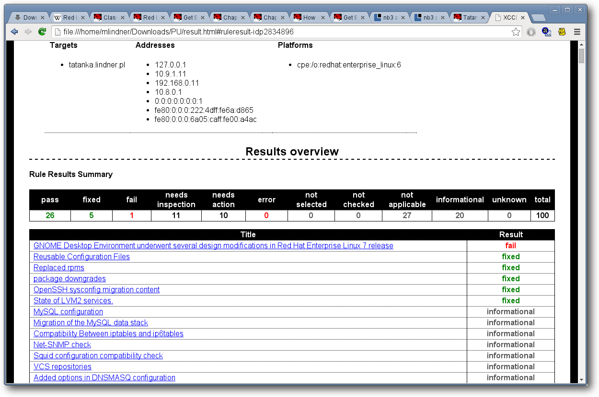

freiesMagazin August 2014
(ISSN 1867-7991)
Topthemen dieser Ausgabe
RHEL7Seit über zehn Jahren bietet Red Hat unter dem Namen Red Hat Enterprise Linux (RHEL) eine auf den Unternehmensmarkt fokussierte Distribution an. Mit der Version 7 stellt der Hersteller ein weitgehend modernisiertes System vor. Im Artikel wird ein Blick auf das System geworfen und es einem Test in einem Produktivszenario unterzogen. (weiterlesen)
Administration von Debian & Co im Textmodus – Teil I
Dieser dreiteilige Workshop richtet sich an alle, die sich auf die eine oder andere Weise mit Debian oder auf Debian basierenden Distributionen (z. B. Ubuntu oder Linux Mint) beschäftigen (wollen/müssen). Hierbei spielt es keine Rolle, ob es sich dabei um den heimischen Server oder Desktop, den gemieteten virtuellen Server für die Homepage oder die Rechner innerhalb der Firma handelt. (weiterlesen)
Spacewalk – Teil 1
System-Administratoren tragen häufig die Verantwortung über eine große Anzahl an Systemen. Zur Administration großer Systemlandschaften ist eine Management-Suite unabdingbar, um einheitliche Systemstati zu garantieren. Mit Spacewalk, Red Hat Satellite und SUSE Manager gibt es drei sehr ähnliche Programme, die jedoch unterschiedliche Einsatzzwecke haben. (weiterlesen)
Zum Index
Inhalt
Linux allgemein
Red Hat Enterprise Linux 7
Der Juli im Kernelrückblick
Anleitungen
Administration von Debian & Co im Textmodus – Teil I
Spacewalk – Teil 1: Einführung, Übersicht und Installation
Software
Kassensystem in C.U.O.N.
Community
Rezension: C++: Das komplette Starterkit für den einfachen Einstieg
Rezension: 97 Things Every … Should Know
Rezension: Kids programmieren 3D-Spiele mit JavaScript
Magazin
Editorial
Leserbriefe
Veranstaltungen
Konventionen
Impressum
Zum Index
Editorial
Kernel-Oops
Eine unschöne Überraschung erlebten die Entwickler des Linux Kernels Mitte Juli, nachdem auf der Mailing-Liste über das Fehlverhalten in einem sogenannten Load Balancer spekuliert wurde. Als Linux Torvalds selbst den Fehler zurückverfolgte, musste er feststellen, dass nicht der Kernel-Quellcode sondern der verwendete Compiler die eigentliche Wurzel des Übels war. Nach Analyse des vom Compiler erstellten Assembler-Codes kritisierte Torvalds die Veröffentlichung dieser in seinen Augen völlig unbrauchbaren Compiler-Version deutlich [1], half aber dennoch bei der Suche nach dem Bug in GCC [2]. Wie sich allerdings im Laufe der Zeit herausstellte, ist das Problem deutlich schwerwiegender, als zuerst angenommen. Ursache der Compiler-Schwierigkeiten ist eine debug_insn genannte Funktion, die bereits in Version 4.5.0 im April 2010 eingeführt wurde. Betroffen von diesem Bug sind anscheinend alle GCC-Versionen von 4.5.0 bis 4.8.3 sowie 4.9.0 und 4.9.1, was Torvalds und anderen Kernel-Entwicklern sicherlich Bauchschmerzen bereiten wird. Abgesehen davon geht die Kernel-Entwicklung wie gewohnt voran, so dass mit einer baldigen Veröffentlichung von Linux 3.16 zu rechnen ist. Mathias Menzer beschreibt in seinem monatlichen Kernelrückblick Details zu den Neuerungen in Linux 3.16.Red Hat Enterprise Linux 7
Vor gut sieben Wochen [3] veröffentlichte Red Hat die neueste Version seines Enterprise Linux, das durch Stabilität und Sicherheit insbesondere auf Unternehmen fokussiert ist. Mittlerweile sind mit Oracle Linux 7 [4] und CentOS 7 [5] bereits zwei sehr beliebte, kostenlose Nachbauten von RHEL 7 entstanden, während das FermiLab, welches das ebenfalls auf RHEL basierende Scientific Linux [6] herausgibt, noch am Nachfolger arbeitet. Grund genug also, dass Mirko Lindner in seiem Artikel Red Hat Enterprise Linux 7 einen ersten Blick auf die neue Distribution wirft und gleich einem Produktivtest unterwirft. Und nun wünschen wir Ihnen viel Spaß mit der neuen Ausgabe! Ihre freiesMagazin-Redaktion Links[1] http://lkml.iu.edu/hypermail/linux/kernel/1407.3/00650.html
[2] https://gcc.gnu.org/bugzilla/show_bug.cgi?id=61904
[3] http://www.redhat.com/about/news/press-archive/2014/6/red-hat-unveils-rhel-7
[4] https://blogs.oracle.com/linux/entry/oracle_linux_7_is_now
[5] http://lists.centos.org/pipermail/centos-announce/2014-July/020393.html
[6] https://www.scientificlinux.org/
 Beitrag teilen Beitrag kommentieren
Beitrag teilen Beitrag kommentierenZum Index
Red Hat Enterprise Linux 7
von Mirko Lindner Seit über zehn Jahren bietet Red Hat unter dem Namen Red Hat Enterprise Linux (RHEL) eine auf den Unternehmensmarkt fokussierte Distribution an. Mit der Version 7 stellt der Hersteller ein weitgehend modernisiertes System vor. Im Artikel wird ein Blick auf das System geworfen und es einem Test in einem Produktivszenario unterzogen. Redaktioneller Hinweis: Der Artikel „Red Hat Enterprise Linux 7“ erschien erstmals bei Pro-Linux [1].Allgemeines
Red Hat Enterprise Linux (RHEL) stellt das Flaggschiff des US-amerikanischen Unternehmens Red Hat [2] dar und ist ein direkter Nachfolger der ehemaligen Linux-Distribution Red Hat Linux (RHL). Als das Unternehmen im September 2003 Red Hat Linux in Fedora transformierte, blieb RHEL als einzige direkt von Red Hat vermarktete Linux-Distribution übrig. Die Basis von RHEL stellt dabei auch heute noch das maßgeblich von Red Hat unterstützte Fedora [3] dar. In der neuesten Version der Unternehmensdistribution ist es Fedora 19. RHEL selbst existiert in verschiedenen Varianten und bildet wiederum die Basis anderer von Red Hat vertriebener Produkte [4]. Das Geschäftsmodell des Unternehmens besteht darin, dass jeder Kunde mit einem aktiven Abonnement den Zugriff auf alle Versionen des von ihm gekauften Produktes hat. Kunden mit RHEL-Subskription können dementsprechend entweder die neueste Version des Produktes nutzen oder so lange bei der alten Version verbleiben, wie sie durch den Distributor unterstützt wird. Kosten bei einem Umstieg auf die neue Version entstehen den Nutzern dabei nicht. Unternehmen oder Anwender, die ein Abonnement besitzen, können die gewünschten Produkte direkt im Kundenportal des Unternehmens herunterladen. Im Falle von Red Hat Enterprise Linux 7 [5] stehen für die Anwender gleich vier verschiedene Medien bereit. Während das knapp 400 MB große „KVM Guest Image“, wie der Name bereits suggeriert, eine speziell an KVM gerichtete Variante darstellt, bietet das 300 MB umfassende „Boot ISO“ ein Minimalsystem, das zur Installation genutzt werden kann. Weitere Pakete müssen dabei direkt von der Seite des Herstellers heruntergeladen oder von der „RHEL 7.0 Binary DVD“ installiert werden. Diese DVD kann ebenso zur Installation des Systems benutzt werden und umfasst alle wichtigen Pakete. Zusätzliche Pakete, die teils von Red Hat nicht offiziell unterstützt werden, finden sich auf der „RHEL 7.0 Supplementary DVD“.Allgemeines zu Installation und Update
Die Installation des Systems kann direkt von einem DVD-Medium oder einem Speicherstick erfolgen. Seit der Version 7 unterstützt der Hersteller die 32-Bit-Architektur nicht mehr direkt. Kunden, die weiterhin 32-Bit-Systeme nutzen wollen, rät Red Hat deshalb, bei der Vorgängerversion 6 zu bleiben. Dasselbe gilt auch für Anwender von Power6-Systemen. Die Ausführung von 32-Bit-Applikationen auf der x86_64-Plattform bleibt dagegen unberührt. So lassen sich weiterhin auch 32-Bit-Anwendungen auf einem 64-Bit-System starten. Entsprechende Kompatibilitätsbibliotheken sind Bestandteil der Distribution. Seit der Version 7 unterstützt RHEL offiziell ein Upgrade von einer Vorgängerversion. Hierfür müssen Anwender allerdings diverse Kriterien erfüllen. So garantiert der Hersteller ein sauberes Update lediglich bei der 64-Bit-Server-Version von RHEL 6. Aktualisierungen der Workstation- und Desktop-Varianten werden nicht unterstützt. Zudem werden auch nicht alle Paketgruppen angeboten. Anwender, die ihr System von RHEL 6 auf die neue Version aktualisieren wollen, müssen außerdem ein freies Abonnement haben und in der Lage sein, rhel-x86_64-server-extras-6 zu abonnieren. Grafische Ausgabe der Upgrade-Prozedur von RHEL 6 auf RHEL 7.
Für das Sammeln von Informationen stellt Red Hat ein eigens geschriebenes Werkzeug unter dem Namen „preupgrade“ zur Verfügung. Das Werkzeug überprüft das System und erstellt eine Liste von Anhängigkeiten bzw. Unverträglichkeiten. Die Resultate werden entweder als Text, HTML-Datei oder als Apache-Root ausgegeben. Potenzielle Probleme, die automatisch korrigiert werden können, behebt das Programm automatisch. Zudem warnt preupgrade vor möglichen Problemen nach einer Aktualisierung. Wurden beispielsweise Pakete installiert, die nicht von Red Hat stammen, warnt das Werkzeug und schlägt die weitere Vorgehensweise vor. Dasselbe gilt bei Optionen oder Parametern, die das Programm identifiziert und die einer Änderung bedürfen. Sind alle Ungereimtheiten beseitigt, kann das eigentliche Werkzeug zur Aktualisierung gestartet werden. „redhat-upgrade-tool“, so der Name der Anwendung, aktualisiert das komplette System auf den Stand von RHEL 7. Als Eingabe kann dabei eine lokale ISO-Datei, ein Verzeichnis, ein Netzwerkverzeichnis oder ein physisches Laufwerk dienen.
Neuinstallation
War die Installation einer Linux-Distribution anfänglich etwas für Spezialisten, so hat Linux diesbezüglich in den letzten Jahren neue Standards gesetzt. Alle großen Linux-Distributionen haben viel Entwicklungszeit in die Verbesserung des Installationsprozesses gesteckt, sodass eine Neuinstallation kaum Probleme bereiten sollte. Fast alle Anbieter konzentrieren sich mittlerweile auf die Pflege der Werkzeuge, so auch Red Hat. So war es kaum verwunderlich, dass auch die neue Version keine Probleme bei der Installation verursachte. Funktionell gesehen unterlag die Auswahl der möglichen Installationsmethoden gegenüber der letzten Version 6 kaum Änderungen. Fast schon obligatorisch änderte der Hersteller die Farbe des Boot-Screens. Im Gegensatz zu RHEL 6 setzt der Hersteller nicht mehr auf eine grafische Darstellung beim Start, sondern auf eine rein textuelle. Von der Funktionalität her gesehen hat sich dagegen nur wenig geändert. So bietet Red Hat immer noch eine automatische Installation wahlweise in einer sicheren Umgebung, ein Rettungssystem oder Speichertest zur Auswahl an. Sprache, Auflösung oder weitere Bootparameter können dagegen nicht direkt bei der Auswahl ausgewählt, aber in Form von Kernelparametern dem System übermittelt werden.
RHEL 7: Textinstallation.
Bereits beim ersten Start fällt die veränderte Installation auf. Der erzwungene Check der Medien ist entfallen. Auch die Überprüfung der Systemvoraussetzungen fällt moderater aus, sodass beispielsweise die grafische Installation auch auf Systemen mit wenig RAM gestartet werden kann. Grundsätzlich hat der Hersteller eine nicht geringe Anzahl von Hardware-Treibern aus dem Produkt entfernt. So fehlen beispielsweise über 80 Netzwerktreiber, die noch in der alten Version 6 enthalten waren. Doch auch andere Treiber sind nicht mehr im Lieferumfang der Distribution. Anwender, die einen Umstieg von einer alten Version auf die neue planen, sollten deshalb zuerst eruieren, ob ihre Hardware auch unterstützt wird. Die grafische Installation unterlag gegenüber dem Vorgänger einer Vielzahl von Änderungen. Während der Anwender sich in RHEL 6 durch zahlreiche Bildschirme klicken musste, sind die Installationsoptionen in der neuen Version an einer Stelle vereint. Der Nutzer hat so einen kompletten Überblick über die Optionen und muss nicht ständig zwischen diversen Seiten herumspringen.
Zusammenfassung der Installation.
Die automatische Vorauswahl der Optionen ist sinnvoll. So werden Sprache und Zeitzone anhand der GeoIP vorausgewählt. Die Wahl der Software beschränkt sich dagegen auf die Auswahl der Basis-Umgebung und die Festlegung von größeren Paketgruppen. Wer bereits bei der Installation seine Pakete auswählen möchte, dürfte enttäuscht sein, denn diese Funktionalität bietet der Installer nicht mehr. War es noch bei der letzten Version der Distribution möglich, die Pakete vor der eigentlichen Installation auszuwählen, muss jetzt dieser Schritt danach erfolgen. Konkret bedeutet das, dass man entweder ein minimales System – wie auch vorgeschlagen – installiert und Pakete nachinstalliert, oder den umgekehrten Weg geht und Pakete später entfernt. Warum Red Hat die dedizierte Auswahl an Paketen aus der Installation entfernte, bleibt wohl ein Geheimnis des Herstellers.
Auswahl der zu installierenden Paketgruppen.
Die Einrichtung der Partitionen wurde in der neuen Version der Distribution ebenfalls massiv verändert. Als Standarddateisystem schlägt das Tool nicht mehr Ext4, sondern XFS vor. Das von SGI stammende XFS ermöglicht unter anderem eine Skalierung auf bis zu 500 TB Speicherplatz und stellt zahlreiche Werkzeuge zur Analyse und Rettung von Daten bereit. Mit von der Partie sind zudem Ext2, Ext3 und Ext4 sowie VFAT. Die Dateisystemunterstützung von Ext2 und Ext3 wird allerdings nach Angaben des Herstellers als veraltet angesehen und kann gegebenenfalls in den kommenden Versionen entfernt werden. Btrfs liefert Red Hat lediglich in Form einer Technologievorschau aus. Dementsprechend kann das Dateisystem zwar genutzt und auch direkt im Installer ausgewählt werden, wird aber im Falle von Problemen nicht vom Support abgedeckt.
Festlegung der Partitionen.
Der grafische Partitionierer wirkt durchdacht, lässt aber diverse Funktionen vermissen. Wer eine fortgeschrittene Aufteilung seiner Festplatte wünscht, wird dementsprechend mit dem Werkzeug nur bedingt glücklich werden und muss zu anderen Programmen greifen. Dasselbe gilt für die Konfiguration des Bootloaders, die wohl eher als marginal bezeichnet werden kann. Hier sollte Red Hat endlich Abhilfe schaffen und das Werkzeug nicht nur aufpolieren, sondern auch funktionell ergänzen. Denn schon die Werkzeuge der Version 6 wirkten keinesfalls komplett. Die eigentliche Installation bereitet kaum Probleme. Neu ist in der Version 7 die Möglichkeit, während der Installation des Systems, das Passwort von „root“ zu setzen und neue Benutzer anzulegen. Nach dem ersten Start präsentiert Red Hat neben den obligatorischen Lizenzbedingungen die Möglichkeit, Kdump einzuschalten und das System beim Red Hat Network anzumelden. Ohne eine Anmeldung ist das System zwar funktionsfähig, kann aber weder aktualisiert noch um weitere Anwendungen aus offiziellen Quellen aufgewertet werden. Die erstmalige Einrichtung wird durch firstboot gewährleistet.
Das Login-Fenster.
Das Grundsystem und der Start
Der Start des mitgelieferten Kernels 3.10 gestaltet sich wenig spektakulär. Das Produkt verzichtet in der aktuellen Version komplett auf einen Ladebalken. Erstmalig setzt Red Hat auch in der Enterprise-Version auf GRUB2. Die neue Generation bietet gegenüber GRUB 0.96, der in RHEL 6 zum Einsatz kam, eine Reihe von neuen Funktionen und Verbesserungen. Unter anderem unterstützt der Bootloader neben BIOS auch zusätzliche Firmwaretypen, einschließlich EFI und OpenFirmware, und neben Master Boot Record (MBR) Partitionstabellen auch GUID Partitionstabellen (GPT). Die wohl größte Neuerung der Basisarchitektur von RHEL stellt der Schwenk auf Systemd dar. Das neue System will zahlreiche Nachteile der alten Lösung SysVInit beseitigen und ermöglicht unter anderem das Hochfahren des Systems ohne Ausführung von Shell-Skripten. Bereits bei der Vorstellung des neuen Systems versprach der Entwickler, dass die Nutzung von Systemd zu einem stark parallelisierten und damit schnelleren Startvorgang führen wird, sowie das Starten und Stoppen von Diensten zuverlässiger vonstattengehen soll. Der Ersatz für das klassische Init-System wird maßgeblich von den beiden Red Hat-Angestellten Lennart Poettering und Kay Sievers entwickelt. In der eingesetzten Version 208 bietet es unter anderem eine Unterstützung für eine zeitbasierte Logrotation und weitreichende Logging-Mechanismen. Ebenfalls neu in RHEL 7 ist die Möglichkeit, schnelle Blockgeräte als Cache für langsamere Blockgeräte einzusetzen. So ermöglicht es die Funktion beispielsweise ein PCIe SSD-Gerät, als Cache für Direct-Attached Storage (DAS) oder Storage Area Network (SAN) Storage zu agieren, wodurch die Dateisystemleistung erhöht werden kann. Die Funktionalität selbst wird allerdings lediglich als Technologievorschau angeboten und wird dementsprechend auch noch nicht offiziell von Red Hat unterstützt. Ebenfalls als Technologievorschau führt Red Hat Enterprise Linux 7 LVM-Cache sowie die LVM-Programmierschnittstelle ein.Der Desktop
Hat der Anwender zuvor die grafische Oberfläche als Standard eingestellt, erblickt er beim ersten Start das Login-Fenster der Standardumgebung GNOME. Die Umgebung wird in der Version 3.8.4 ausgeliefert. Wie bereits angekündigt, nutzt der Hersteller in der Standardeinstellung nicht die neue Shell, sondern setzt GNOME 3 im Classic-Modus ein. Als Grund hatte Red Hat bereits in der Vergangenheit die Gewohnheiten der Benutzer angegeben. Demnach haben sich Kunden bereits an die alte Oberfläche gewöhnt und Red Hat will sie nicht durch einen radikalen Schnitt, wie er in GNOME 3 stattfand, verschrecken. Denise Dumas, Leiterin der Softwareentwicklung bei Red Hat, sprach bei der initialen Ankündigung von dem Wunsch des Unternehmens, „die bewährten Abläufe der Kunden in RHEL nicht stören zu wollen“. Wer allerdings dennoch die neue Variante einsetzen möchte, kann sie selbstredend einfach starten. Einschränkungen hat der Anwender in diesem Fall nicht zu befürchten.GNOME in der Standardansicht …
Gänzlich ohne Umstellung kommen die Anwender allerdings auch in RHEL 7 nicht aus. Neben der obligatorischen Änderung der grafischen Gestaltung änderte sich, auch bedingt durch den Einsatz der neuen Umgebung, das Login-Fenster, das nun auf den GNOME Display Manager setzt. Weitere Manager werden von Red Hat nicht offiziell unterstützt und dementsprechend auch nicht ausgeliefert.
… und in der ebenfalls verfügbaren, neuen Ansicht.
Zusätzlich zu GNOME liefert der Hersteller offiziell auch KDE aus. Die in der Version 4.10 ausgelieferte Umgebung wurde ebenfalls angepasst und vorkonfiguriert. Wie bei GNOME gibt es keine Punkte, die beanstandet werden können. Die Umgebung ist sauber konfiguriert und für ein Serversystem mehr als funktionell eingerichtet.
KDE SC in der Version 4.10.
Wer das System in der deutschen Sprache installiert, bekommt ein weitgehend lokalisiertes System vorgesetzt, bei dem das Unternehmen sogar das Änderungslog übersetzt hat.
Serversystem
Der wohl gängigste Einsatzzweck der Distribution wird der Server sein – sei es wegen des langen Supportzeitraumes oder des Fokus auf Stabilität. Fast alle Server, die RHEL 7 mit sich bringt, sind entweder bereits vorkonfiguriert oder werden mit einer prinzipiell funktionsfähigen Installation geliefert. Mit der Veröffentlichung von RHEL 7 kehrt auch Red Hat offiziell MySQL den Rücken und nimmt stattdessen MariaDB 5.5.35 in die Distribution auf. Zudem kommt die Distribution mit PostgreSQL 9.2.7 und dem Apache HTTP Server 2.4.6. Für eine Windows-Anbindung des Systems sorgt Samba in der Version 4.1.1. Die neue Samba-Version kann unter anderem als Domänen-Controller, sowie als Active-Directory-Server fungieren. Sie enthält dazu einen LDAP-Server, ein Kerberos Key Distribution Center (KDC) und die Möglichkeit, sich wie in Samba 3 über CIFS anzumelden. Faktisch gesehen spielt es nun keine Rolle mehr, welche Art Server der Kunde wünscht – das neue Produkt von Red Hat wird diesen Wunsch mit großer Wahrscheinlichkeit erfüllen können. Was das bedeutet, hat Red Hats Produktverantwortlicher Paul Cormier bei der Vorstellung der neuen Distribution klar gemacht: RHEL 7 will auf alle Plattformen kommen. Es spielt dabei keine Rolle, ob es sich dabei um einen Standardserver, eine virtuelle Maschine, OpenStack-basierende Infrastructure-as-a-Service (IaaS) oder Platform-as-a-Service (PaaS) handelt – Red Hat hat den Anspruch, mit dem neuesten Produkt all diese Szenarien abdecken zu können. So bietet das neue Produkt vor allem in den neu ankommenden Feldern zahlreiche Verbesserungen gegenüber dem Vorgänger. Die Virtualisierungsfunktionen wurden gegenüber der letzten Version stark ausgebaut. Neben KVM unterstützt die Distribution nun auch Xen und Hyper-V. So kann RHEL 7 beispielsweise als virtuelle Maschine der zweiten Generation auf dem Microsoft Hyper-V Server 2012 R2 Host verwendet werden. Zusätzlich zu den in der vorherigen Version unterstützten Funktionen bietet Generation 2 neue Funktionen auf einer virtuellen Maschine, zum Beispiel sicheres Booten, booten von einer SCSI virtuellen Festplatte oder UEFI-Firmware-Unterstützung. Mit der Integration der Docker-Technologie stellt Red Hat in der neuen Version der Distribution eine einfache Möglichkeit zur Erstellung, Auslieferung, Portabilität und Isolation von Anwendungen in physischen, virtuellen und Cloud- sowie in Entwicklungs-, Test- und Produktionsumgebungen vor. Die eingesetzte Version trägt die Versionsnummer 0.11. Ein weiterer Schwerpunkt der Entwicklung des Systems lag laut Aussage des Unternehmens auf der Verbesserung der Clustering-Möglichkeiten. So wurde rgmanager durch Pacemaker ersetzt, was gleich mehrere Vorteile mit sich bringt. Das Pacemaker Configuration System, oder kurz pcs, hat gleich mehrere Tools verdrängt (ccs, ricci, luci) und dient als einheitliches Werkzeug zur Cluster-Konfiguration und -Verwaltung. Zudem haben die Entwickler den Lastverteiler Piranha durch keepalived und HAProxy ersetzt. Das Lastverteilungs-Framework basiert auf einem Linux Virtual Server Kernel-Modul, das Layer 4 Netzwerklastverteilung bereitstellt. Der keepalived Daemon implementiert dagegen eine Reihe von Prüfungen für lastverteilte Server-Gruppen abhängig von deren Status. HAProxy ist einen Netzwerklastverteiler für TCP- und HTTP-basierte Anwendungen. Für die Sicherheit des Servers sorgt neben zahlreichen Authentifizierungs- und Interoperabilitätmechanismen auch der Einsatz von SELinux. So wird jedem Anwender anhand der SELinux-Richtlinie ein SELinux-Benutzer zugewiesen. Dadurch können Linux-Benutzer die Einschränkungen erben, die auf SELinux-Benutzer angewendet werden. Standardmäßig wird jeder Benutzer dem SELinux-Benutzer unconfined_u zugeordnet. Zudem wurden die nss-Pakete auf die Version 3.15.2 aktualisiert. Signaturen der Message-Digest Algorithmen 2 (MD2), MD4 und MD5 werden für Online Certificate Statusprotokoll (OCSP) oder Zertifikatsperrlisten (Certificate Revocation Lists oder kurz CRLs) nicht mehr akzeptiert.Fazit
Mit Red Hat Enterprise Linux 7 liefert der Hersteller eine grundsolide Distribution aus, die aber bei Weitem nicht die funktionelle Vielfalt der Gemeinschafts-Distribution Fedora aufweist. Dafür sind die in der Distribution enthaltenen Programme schier unzerstörbar und die zum Einsatz kommenden Konzepte stimmig. Das Unternehmen will laut eigener Aussage ein Produkt ausliefern, das Unternehmenskunden ermöglicht, Linux professionell zu nutzen. Diesem Anspruch wird Red Hat auch definitiv gerecht. Zu keinem Zeitpunkt des Tests verhielt sich die Distribution irgendwie „falsch“ oder bereitete gar größere Probleme. Alle getesteten Anwendungen waren stattdessen entweder bereits vorkonfiguriert oder konnten mit nur geringen Anpassungen gestartet werden. Auch hier gab es keine Beanstandungen. Die letzte Iteration des Systems bringt nicht nur ein solides System mit sich, sondern erweitert das umrissene Anwendungsszenario massiv. Förmlich an jeder Ecke merkt der Anwender die Intention des Herstellers: ein schnörkelloses Server-System für Server oder Data-Center, das sich jedem erdenklichen Einsatz fügt und mit einem langen Supportzyklus aufwartet. Dass dabei nur wenig Platz für den Heimanwender bleibt, versteht sich von selbst. Für ihn bietet das Unternehmen andere Produkte an – sei es die Gemeinschafts-Distribution Fedora oder die Unternehmens-Version CentOS [6]. RHEL 7 bleibt dagegen der zugeschriebenen Rolle einer grundsoliden, universal einsetzbaren und flexiblen Unternehmens-Distribution treu. Links[1] http://www.pro-linux.de/artikel/2/1695/red-hat-enterprise-linux-7.html
[2] http://www.redhat.com/
[3] http://fedoraproject.org/de/
[4] http://www.redhat.com/products/
[5] http://www.redhat.com/about/news/press-archive/2014/6/red-hat-unveils-rhel-7
[6] http://www.centos.org/
| Autoreninformation |
| Mikro Lindner (Webseite) befasst sich seit 1990 mit Unix. Seit 1998 ist er aktiv in die Entwicklung des Kernels eingebunden. Daneben ist er einer der Betreiber von Pro-Linux.de. |
Beitrag teilen Beitrag kommentierenZum Index
Der Juli im Kernelrückblick
von Mathias Menzer Basis aller Distributionen ist der Linux-Kernel, der fortwährend weiterentwickelt wird. Welche Geräte in einem halben Jahr unterstützt werden und welche Funktionen neu hinzukommen, erfährt man, wenn man den aktuellen Entwickler-Kernel im Auge behält.Linux 3.16
Noch im Juni wurde die dritte Entwicklerversion veröffentlicht [1], die in Bezug auf ihre Größe gut zu diesem Entwicklungszyklus passt. So blieb sie recht kompakt. An sichtbarsten waren dabei weitere Korrekturen für die VDSO-Infrastruktur sowie kosmetische Korrekturen an einem Treiber für Realtek-Audio-Chipsätze. Linux 3.16-rc4 [2] schrumpfte danach fast auf die Hälfte zusammen. Unter den nicht ganz 200 Änderungen finden sich einige Korrekturen für System-on-Chip-Prozessoren auf ARM-Basis und ein weiterer Satz an Fehlerbereinigungen für das Dateisystem btrfs. Das meiste entfiel jedoch auf kleinere Bugfixes und Verbesserungen im Bereich der Treiber. Ein wenig umfangreicher fielen die fünfte [3] und sechste [4] Entwicklerversion aus, wobei erstere fast ausschließlich mit kleinen Korrekturen besetzt war, aus denen Anpassungen in der Dokumentation und Änderungen an der Energieverwaltungsschnittstelle ACPI ein wenig herausstachen. Verbesserungen am freien Grafiktreiber Radeon konnte dann -rc6 aufweisen, die zusammen mit Korrekturen und Aufräumarbeiten am Netzwerk-Dateisystem NFS ein wenig dazu beitrugen, dass diese Version nochmals etwas größer ausfiel. Dennoch finden sich keine Änderungen, die Torvalds Grund zur Besorgnis geben würden, auch wenn er in der Freigabe-Mail deutlich machte, dass er sich nun eine Beruhigung der Entwicklung wünsche. Als wäre er erhört worden, fiel mit Linux 3.16-rc7 [5] die Zahl der Änderungen wieder unter die 200er Marke. Auch hier liegt das Gros der Änderungen in kleinen Korrekturen, die zumeist nur wenige Quelltextzeilen umfassen. Eine der Änderungen, die etwas hervorstechen, ist ein Satz an Korrekturen für die xtensa-Architektur [6], die Prozessorkerne für Signalverarbeitung ermöglicht, welche vom Hersteller mittels eines flexiblen Befehlssatzes sehr einfach auf den Einsatzzweck zugeschnitten werden können. Nutzer dieser Prozessoren ist beispielsweise AMD, die diese Architektur für TrueAudio [7] lizenziert hat. Sollte Torvalds Wunsch erfüllt werden, so wird demnächst Linux 3.16 als neue stabile Version freigegeben. Die Debian-Entwickler dürfte eine Woche hin oder her nicht sonderlich stören, obwohl sie sich gerade auf 3.16 als Kernel für Debian Jessie geeinigt haben [8]. Der Funktionsumfang der derzeit in der Entwicklung befindlichen kommenden Debian-Version soll im November dieses Jahres eingefroren werden, bis dahin ist für die Kernel-Entwickler also noch genügend Zeit. Interessanterweise setzt Debian hier nicht auf die von Greg Kroah-Hartmann gepflegte Langzeitversion Linux 3.14. Eventuell springt hier wieder der Debian-Kernel-Maintainer Ben Hutchings in die Bresche, der bereits den in Debian Wheezy genutzten Kernel 3.2 als Langzeit-Version betreut. Links[1] https://lkml.org/lkml/2014/6/29/126
[2] https://lkml.org/lkml/2014/7/6/150
[3] https://lkml.org/lkml/2014/7/13/187
[4] https://lkml.org/lkml/2014/7/21/6
[5] https://lkml.org/lkml/2014/7/27/111
[6] http://ip.cadence.com/ipportfolio/tensilica-ip/xtensa-customizable
[7] http://www.amd.com/de-de/innovations/software-technologies/trueaudio
[8] http://www.pro-linux.de/-0h215354
| Autoreninformation |
| Mathias Menzer (Webseite) behält die Entwicklung des Linux-Kernels im Blick, um über kommende Funktionen von Linux auf dem Laufenden zu bleiben und immer mit interessanten Abkürzungen und komplizierten Begriffen dienen zu können. |
Beitrag teilen Beitrag kommentierenZum Index
Administration von Debian & Co im Textmodus – Teil I
von Hauke Goos-Habermann und Maren Hachmann Dieser dreiteilige Workshop richtet sich an alle, die sich auf die eine oder andere Weise mit Debian [1] oder auf Debian basierenden Distributionen (z. B. Ubuntu [2] oder Linux Mint [3]) beschäftigen (wollen/müssen). Hierbei spielt es keine Rolle, ob es sich dabei um den heimischen Server oder Desktop, den gemieteten virtuellen Server für die Homepage oder die Rechner innerhalb der Firma handelt. Inhalt des Workshops ist die Administration mittels der Kommandozeilenwerkzeuge: Diese bieten – neben dem Gewinnen eines tieferen Einblicks in die Distribution – den Vorteil, im Falle eines Falles auch ohne eine grafische Oberfläche das System administrieren und ggf. Systemfehler beheben zu können. Und natürlich gehören (zumindest grundlegende) Kenntnisse über die Administrationsmöglichkeiten auf der Kommandozeile zu den Basisfertigkeiten eines jeden Administrators. Teil I des Workshops widmet sich den Workshop-Vorbereitungen, dem Benutzer „root“, dem Erlangen von grundlegenden Informationen über das System, Pfadangaben unter Linux, zeitsparenden Tipps, grundlegenden Dateioperationen, den Zugriffsrechten, der Suche nach Dateien und Textinhalten und dem Finden von Hilfestellungen. In den Teilen II und III wird es unter anderem um die Konfiguration des Netzwerkes und die Softwareverwaltung gehen sowie darum, Fehler zu identifizieren und zu beheben. Natürlich werden auch die allseits „beliebten“ Praxisfälle „Kaputten Bootmanager reparieren“ und der Klassiker „Passwort vergessen“ nicht fehlen. Es ist empfehlenswert, möglichst viele der hier aufgeführten Kommandos selbst auszuprobieren, auch wenn im Verlauf des Workshops nicht ausdrücklich dazu aufgefordert wird. Denn hier gilt wie (fast) überall sonst auch: Durch das tatsächliche Ausführen bleibt das Gelernte am besten hängen. Die Probleme, die beim Ausprobieren auftreten und die entsprechenden Problemlösungsstrategien lassen sich so am einfachsten finden und erproben. Auf dem virtuellen Workshop-Computer kann nämlich – im Gegensatz zum Server „im echten Leben“ – nichts kaputt gehen, was durch ein erneutes Importieren der virtuellen Maschine nicht wiederherzustellen wäre.Workshopvorbereitungen
Was braucht man alles?
Wer möglichst viel vom Inhalt dieses Workshops für sich „mitnehmen“ möchte, sollte zum aktiven Mitmachen und Ausprobieren Folgendes bereitstellen:- ein PC/Notebook mit installierter VirtualBox [4]-Software (ab Version 4.3.4),
- die Debian-Admin-Workshop-Appliance [5] (488 MB),
- eine aktuelle ISO-Datei der Live-Linux-Distribution Knoppix [6] (ca. 700 MB),
- ein funktionierendes Netzwerk mit Internetanbindung,
- diesen Artikel.
Was ist die Debian-Admin-Workshop-Appliance?
Für den Workshop wurden zwei virtuelle Maschinen (VMs [7]) erstellt und in ein Installationspaket verpackt. Dieses Installationspaket – auch Appliance genannt – kann nun auf anderen Rechnern in eine Virtualisierungssoftware importiert werden, um die beiden VMs zu erhalten.Vereinfachtes Netzwerkschema der virtuellen Maschinen.
Die beiden VMs
Bei den beiden VMs handelt es sich um ein mit m23 [8] aufgesetztes Debian Wheezy, auf dem die Schritte des Workshops ausprobiert werden können und eine VM mit der Firewalldistribution IPCop [9], die als virtueller Router genutzt wird. Letztere muss während des Übens zwecks Internetverbindung eingeschaltet sein, braucht jedoch nicht verändert zu werden.Import
Das Installationspaket lässt sich z. B. unter VirtualBox [10] importieren. Hierzu lädt man VirtualBox für das eigene Betriebssystem herunter und installiert es wie auf der VirtualBox-Seite angegeben. Danach startet man VirtualBox und importiert die Appliance wie folgt:- Im Dialog-Fenster unter „Datei -> Appliance importieren…“ auf den Button „Appliance öffnen…“ klicken, dann die heruntergeladene Datei Debian-WS.ova auswählen und mit „Weiter“ bestätigen.
- Wichtig: Das „Zuweisen neuer MAC-Adressen für alle Netzwerkkarten“ bleibt deaktiviert.
- Nach einem Klick auf „Importieren“ muss man etwas warten …
- Die beiden virtuellen Maschinen („Debian-Admin-Workshop“ und „IPCop“) können dann gestartet werden, wobei man bei der „Debian-Admin-Workshop“-VM etwas warten muss, da diese absichtlich keine Netzwerkverbindung aufnehmen kann.
- Nutzername und Passwort für die „Debian-Admin-Workshop“-VM lauten test und test bzw. root und test.
- Der Vollständigkeit halber sei erwähnt, dass Nutzername und Passwort für die „IPCop“-VM root / testtest lauten; dies wird aber nicht benötigt.
- Die Weboberfläche von IPCop ist zudem über HTTPS auf dem Port 8443 (https://192.168.1.4:8443) mit dem Nutzer admin und Passwort testtest zu erreichen – dies allerdings nur innerhalb des abgetrennten Subnetzwerkes und nicht direkt vom Gastgeber-Rechner aus.
Grundlagen
Nach einem Login als normaler Benutzer auf der Debian-Admin-Workshop-VM (test / test – für den Ernstfall sind natürlich sichere Passwörter empfehlenswert) kann es losgehen.root werden
Die meisten kennen den Spruch „Ich bin root, ich darf das!“ – Aber wie wird man root, also der Administrator des Systems, der alles verändern darf? Unter Debian hilft, wenn man bereits als „normaler Benutzer“ eingeloggt ist, das Kommando$ su
bzw. unter Ubuntu und dessen Derivaten
$ sudo bash
und die Eingabe des Administrator-Passwortes (bzw. des
Nutzer-Passwortes bei Ubuntu und dessen Derivaten).
Root-Rechte werden bei der Administration für alle Tätigkeiten
benötigt, die in das System eingreifen und bei falscher Anwendung auch
das System unbrauchbar machen können. Insbesondere die Installation
neuer Software und das Bearbeiten systemrelevanter Dateien (z. B. das
Netzwerk oder den Bootmanager betreffend) durch Unbefugte werden so
verhindert. Zum Ausloggen verwendet man den Befehl
# exit
oder man nutzt die Tastenkombination „Strg“ + „D“.
Im Folgenden gibt das Zeichen vor einer Befehlsangabe (Prompt genannt)
an, ob der Befehl mit normalen Benutzerrechten ($) oder mit
Root-Rechten (#) eingegeben werden muss.
Aktuelle Distribution und Rechnerarchitektur
Grundlegende Informationen zum Rechner (Architektur, etc.) bietet die Ausgabe von$ uname -a
Die Bezeichnung der Distribution lässt sich durch ein einfaches
$ cat /etc/issue
ermitteln.
Zur Erklärung: uname [11] gibt
Informationen über den Namen, die Architektur, den Kernel und den
Prozessor des Systems aus. Der Parameter -a oder --all sagt
uname, dass es alle Informationen ausgeben soll.
cat [12] ist ein
Unix-Werkzeug, dass Inhalte von Dateien einliest und auf die
Standardausgabe (in diesem Fall das Terminal) ausgibt. In der Datei
/etc/issue ist der Name der Distribution angegeben.
Pfadangaben
Linux kennt zwei verschiedene Arten von Pfadangaben, die zu einer Datei oder einem Verzeichnis führen: Die absolute Pfadangabe, bei der alle Überverzeichnisse, getrennt durch einen Schrägstrich, angegeben werden und die mit einem Schrägstrich (dem Wurzelverzeichnis) beginnt: /etc/apt/sources.list. Die relative Pfadangabe:- die Datei eine Ebene über dem aktuellen Verzeichnis:
$ ../datei.txt
- die Datei eine Ebene unter dem aktuellen Verzeichnis:
$ unterverzeichnis/datei.txt
- Ausführen einer Datei im aktuellen Verzeichnis:
$ ./mein-Shell-Skript.sh
- Verwenden einer Datei im aktuellen Verzeichnis (mit einem Programm):
$ programmname datei.txt
- Datei im Heimatverzeichnis (/home/Nutzername bzw. ~) des aktuellen Benutzers:
$ ~/datei.txt
Die Arbeit beschleunigen
Auch wenn es in Filmen „cool“ aussieht, wenn „Hacker“ wüst auf ihre Tastatur einhacken, sollte man unnötige Schreibarbeit vermeiden, da Tippen fehleranfällig ist und die Bash [13] (die Standard-Unix-Kommandozeile unter Debian) einem viel Arbeit abnehmen kann. Ein paar Tipps zum Vermeiden des „Tippens“:- Mit den Tasten „Pfeil hoch“ und „Pfeil runter“ kann man durch die bereits eingegebenen Befehlszeilen blättern.
- Die Tasten „Pfeil links“ und „Pfeil rechts“ bewegen den Cursor in der aktuellen Zeile.
- „Strg“ + „R“ startet die Suche in bereits eingegebenen Kommandozeilen. Danach gibt man einen Suchbegriff ein, worauf die erste passende Zeile als Vorschlag angezeigt wird. Gibt es mehrere auf den Suchbegriff passende Zeilen, so zaubert weiteres Drücken von „Strg“ + „R“ die jeweils nächste Zeile auf den Bildschirm. Möchte man den Vorschlag annehmen, so drückt man abschließend „Enter“, wodurch der gefundene Befehl auch gleich ausgeführt wird.
- Wenn es um Befehle (und ggf. deren Parameter), Dateien und Verzeichnisse geht, reicht es, die (eindeutigen) Anfangsbuchstaben einzugeben und anschließend die Tabulator-Taste zu drücken. Gibt es nur einen Befehl (Datei etc.), der mit den Buchstaben beginnt, so erscheint der auf der Kommandozeile. Sollte das nicht der Fall sein, so hilft ein weiterer Druck auf „Tab“, um alle passenden Befehle aufzulisten. Anschließend hilft die Erweiterung der bereits eingegebenen Buchstaben um weitere, damit der Befehl eindeutig gefunden werden kann. Sind genug eindeutige Buchstaben eingegeben, so vervollständigt „Tab“ abschließend.
- Das Paket gpm erweitert die tastaturbasierte Kommandozeile um einen Mauszeiger. Durch Klicken und Ziehen des Zeigers können Textbereiche markiert und durch Klicken der mittleren Maustaste (bzw. durch gleichzeitiges Drücken von linker und rechter Maustaste) der Text an der Position des Textcursors wieder eingefügt werden (eine Installation auf der Workshop-VM ist allerdings erst möglich, wenn das Netzwerk repariert wurde!).
- Bei langen Ausgaben kann es sein, dass man den Anfang der Ausgabe nicht mehr auf dem Bildschirm sehen kann. Wenn man im reinen Textmodus ohne Scrollleiste arbeitet, kann man mit „Shift“ + „Bild auf“ bzw. „Shift“ + „Bild ab“ durch die Ausgabe scrollen.
Praktische Helfer
Der Zweispaltendateimanager Midnight Commander [14] ist ein praktisches Werkzeug für viele Dateioperationen, den man mit dem Befehl$ mc
aufruft. Um nicht versehentlich wichtige Dateien zu verändern oder zu
löschen, sollte man dies nur als normaler Benutzer machen. Midnight
Commander ist auf der Workshop-VM übrigens noch nicht installiert – so
ist man gezwungen, Dateioperationen zunächst nur mit der Kommandozeile
durchzuführen.
Wer vi [15],
vim [16] und Konsorten mag und damit
umzugehen weiß, wird mit dem weniger kryptischen – aber auch weniger
mächtigen – Texteditor
nano [17] wenig
anfangen können. Wer es aber lieber einfach mag, findet in diesem einen
gut zu bedienenden Editor für alle Textdateien.
$ nano Dateiname.Erweiterung
Dabei wird die Textdatei, wenn sie schon existiert, zum Bearbeiten
geöffnet, ansonsten wird sie neu angelegt. Dies sollte man jetzt
unbedingt ausprobieren, da die neue Datei im nächsten Abschnitt zum
kopieren, verschieben und löschen benötigt wird. Das kleine ^ bei der
Übersicht über die Tastaturkürzel (unten in nano) steht für die
„Strg“-Taste.
Kopieren, verschieben, löschen
Wem mc zu komfortabel sein sollte oder wenn mc (wie auf der Workshop-VM) nicht zur Verfügung steht, gibt es natürlich Kommandozeilenwerkzeuge für alle Dateioperationen:- Verzeichnis(se) anlegen:
$ mkdir <Verzeichnis1> <Verzeichnis2>
- Datei(en) kopieren:
$ cp <Datei1> <Datei2> <Verzeichnis>
- Datei kopieren und umbenennen:
$ cp <Datei> <Datei neuer Name>
- Datei mit neuem Namen kopieren:
$ cp <Datei> <Pfad/Datei neuer Name>
- Verzeichnis(se) kopieren:
$ cp -r <Verzeichnis1> <Verzeichnis2> <Zielverzeichnis>
- Datei(en) verschieben:
$ mv <Datei1> <Datei2> <Verzeichnis>
- Datei umbenennen:
$ mv <Datei> <Datei neuer Name>
- Datei(en) löschen:
$ rm <Datei1> <Datei2>
- Leere(s) Verzeichis(se) löschen:
$ rmdir <Verzeichnis1> <Verzeichnis2>
- Verzeichis(se) mit Unterverzeichnissen und Dateien löschen:
$ rm -r <Verzeichnis1> <Verzeichnis2>
Zugriffsrechte
Unter Linux besitzen jede Datei und jedes Verzeichnis Zugriffsrechte, die regeln, wer, wie und ob überhaupt zugreifen darf. Mit$ ls -l
kann man sich die ausführliche Liste der Dateien und Verzeichnisse im
aktuellen Verzeichnis (inklusive Zugriffsrechten) ausgeben lassen.
1 lrwxrwxrwx 1 peter gruppea 13 4. Apr 2012 todo.txt -> /backup/todo.txt
2 -rw-r--r-- 1 paul gruppeb 65536 1. Jan 2012 Paul-schreibt-andere-lesen.txt
3 -rw-rw-r-- 1 peter gemeinsamegruppe 128 18. Aug 2013 Gruppentext.txt
4 -rw------- 1 paul paul 7889 21. Jul 23:26 Pauls-geheime-Gedanken.txt
5 drwxr-xr-x 2 paul paul 4096 23. Jul 2012 Paul-schreibt-andere-lesen
Das Schema der Ausgabe ist folgendes:
2 -rw-r--r-- 1 paul gruppeb 65536 1. Jan 2012 Paul-schreibt-andere-lesen.txt
3 -rw-rw-r-- 1 peter gemeinsamegruppe 128 18. Aug 2013 Gruppentext.txt
4 -rw------- 1 paul paul 7889 21. Jul 23:26 Pauls-geheime-Gedanken.txt
5 drwxr-xr-x 2 paul paul 4096 23. Jul 2012 Paul-schreibt-andere-lesen
<Typ><BBB><GGG><AAA> <H> <Benutzer> <Gruppe> <Größe> <Änderungszeit> <Datei-/Verzeichnisname>
Der Typbezeichnung, bei der - für eine Datei, d für ein
Verzeichnis und l für einen symbolischen Link steht, folgen 3 Blöcke
mit je 3 Zeichen. Dabei steht der erste Block für die Rechte des Besitzers,
der zweite für die Rechte der Gruppe und der letzte für alle anderen
Benutzer. r steht für das Leserecht, w für das
Schreib-/Änderungsrecht und x für das Ausführungsrecht. Nach dem
Rechte-Block folgt eine Angabe der Anzahl der
Hardlinks [18] auf die Datei (mind.
1) oder das Verzeichnis (mind. 2). Danach folgen der Name des
Besitzers, dann der der Gruppe, die Dateigröße, dann der Zeitpunkt der
letzten Änderung und abschließend der Name der Datei bzw. des
Verzeichnisses oder Informationen über den symbolischen Link.
ls steht dabei für „list“ und ist damit wohl einer der am häufigsten
genutzten Shell-Befehle. Der Parameter -l sorgt dafür, dass so viele
Informationen wie möglich über die aufgelisteten Dateien und
Verzeichnisse ausgegeben werden. Ein
zusätzliches -a zeigt alle,
also auch versteckte, Dateien an.
Besitzer und Gruppenzuordnung ändern
Man kann den Besitzer einer Datei bzw. eines Ordners sowie deren Gruppenzuordnung wie folgt ändern.- Besitzer ändern:
# chown <Neuer Besitzer> <Datei-/Verzeichnisname>
- Gruppe ändern:
# chgrp <Neue Gruppe> <Datei-/Verzeichnisname>
- Besitzer und Gruppe ändern:
# chown <Neuer Besitzer>:<Neue Gruppe> <Datei-/Verzeichnisname>
Zugriffsrechte ändern
Die Zugriffsrechte für Besitzer, Gruppe und andere können hier jeweils als Zahl angegeben werden. Das Leserecht hat den Wert 4, das Schreib-/Änderungsrecht 2 und das Ausführen-Recht 1. Sollen mehrere Rechte vergeben werden, so werden die Werte einfach addiert (z. B. Lesen + Schreiben = 6). Das Ändern der Rechte geschieht mit$ chmod <BGA> <Datei-/Verzeichnisname>
Zum Beispiel erlaubt
$ chmod 754 info.txt
dem Besitzer das Lesen, Schreiben und Ausführen, der Gruppe das Lesen
und Ausführen und allen anderen das Lesen der Datei info.txt. Sollen
hierbei Verzeichnisse, Unterverzeichnisse und enthaltene Dateien mit
eingeschlossen werden, so kommt ebenfalls der Parameter -R hinzu.
Suchen und finden
Häufig ist es nötig, Dateien zu finden. Hierbei helfen unter anderem die Programme grep [19] und find [20]. Weiterhin gibt es noch locate [21], was sehr schnell, jedoch auf einen regelmäßig aktualisierten Suchindex angewiesen ist.- Dateien im aktuellen Verzeichnis (dieses wird als Punkt (.)
angegeben) und Unterverzeichnissen (mit dem Parameter -r für
rekursiv) suchen, deren Inhalt die „test“ enthält:
$ grep test -r .
- Groß-/Kleinschreibung von „test“ ignorieren:
$ grep test -r -i .
- Nur die Namen von Dateien mit Treffern ausgeben:
$ grep test -r -i -l .
- Alle Verzeichnisse finden, die zum Programm nano gehören:
$ whereis nano
- Datei-/Verzeichnisnamen, die „test“ enthalten, im aktuellen
Verzeichnis und Unterverzeichnissen suchen:
$ find | grep test>
Hilfe ohne Internet: man und --help
Für den Fall, dass einmal kein Internetanschluss zur Verfügung stehen sollte oder vielleicht auch, weil es bei einigen Dingen einfach schneller ist, Hilfetexte direkt aus dem System zu bekommen, soll das Kommando$ man <Befehl>
nicht unerwähnt bleiben. Neben man bieten viele Programme auch eine
eingebaute (meist kürzere) Hilfe an, die mittels
$ <Programm> --help
aufgerufen wird. Wenn --help nicht zum Erfolg führt, kann der
Parameter auch (nach absteigender gefühlter Vorkommenshäufigkeit
sortiert) -help, -h oder -? heißen. Alternativ kann das
Programm den Hilfetext auch ausgeben, wenn kein Parameter oder ein
ungültiger Parameter angegeben wird. Einfach mal ausprobieren – in der
VM kann ja nichts Wertvolles kaputt gehen.
Ein Workshop-Teilnehmer übt.
Links
[1] https://www.debian.org/
[2] http://www.ubuntu.com/
[3] http://linuxmint.com/
[4] https://www.virtualbox.org/
[5] http://sf.net/projects/dodger-tools/files/vms/Debian-WS2.ova/download
[6] http://www.knopper.net/knoppix-mirrors/
[7] http://de.wikipedia.org/wiki/Virtuelle_Maschine
[8] http://m23.sf.net
[9] http://www.ipcop.org
[10] http://www.virtualbox.org
[11] http://de.wikipedia.org/wiki/Uname
[12] http://de.wikipedia.org/wiki/Cat_(Unix)
[13] http://de.wikipedia.org/wiki/Bourne-again_shell
[14] http://de.wikipedia.org/wiki/Midnight_Commander
[15] http://de.wikipedia.org/wiki/Vi
[16] http://de.wikipedia.org/wiki/Vim
[17] http://de.wikipedia.org/wiki/Nano_(Texteditor)
[18] http://de.wikipedia.org/wiki/Hardlink
[19] http://de.wikipedia.org/wiki/Grep
[20] http://de.wikipedia.org/wiki/Find
[21] http://de.wikipedia.org/wiki/Locate_(UNIX)
| Autoreninformation |
| Hauke Goos-Habermann und Maren Hachmann gehören zum Core-Team der Kieler Open Source und Linux Tage, bei denen beide auch Live-Workshops anbieten. |
Beitrag teilen Beitrag kommentierenZum Index
Spacewalk – Teil 1: Einführung, Übersicht und Installation
von Christian Stankowic System-Administratoren tragen häufig die Verantwortung für eine große Anzahl an Systemen. Zur Administration großer Systemlandschaften ist eine Management-Suite unabdingbar, um einheitliche Systemstatus zu garantieren. Mit Spacewalk, Red Hat Satellite und SUSE Manager gibt es drei sehr ähnliche Programme, die jedoch unterschiedliche Einsatzzwecke haben.Vorwort
Es gibt eine große Menge an Werkzeugen, um Linux-Systeme zentral zu verwalten. Mit Puppet [1] und Chef [2] gibt es zwei äußerst umfangreiche und am Markt etablierte Configuration Management-Toolkits. Jeweils erhältlich in mehreren Editionen gibt es je nach Größe der Systemlandschaft passende Werkzeuge. Configuration Management ist eine sehr wichtige Komponente einer zentralen Systemverwaltung – allerdings gibt es noch weitere wichtige Komponenten:- Software/Update-Management: zentrale Verwaltung und Bereitstellung von Softwarepaketen
- Content-Provisioning/-Caching: Bereitstellen von Software-Paketen, keine erneuten Downloads pro Client erforderlich
- System-Provisioning/Kickstart: Bereitstellen von physischen und virtuellen Systemen
- Sicherheits- und Lizenz-Auditing/-Reporting: Überprüfen von Sicherheitsrichtlinien und Lizenzeinheiten
- Crash-Reporting: Sammeln von Programmabstürzen und -fehlern
- Monitoring: Überwachen der einzelnen Hosts und deren Dienste
Red Hat Satellite
Mit Red Hat Satellite [3] gibt es ein kommerzielles Produkt, dessen Haupteinsatzzweck die Verwaltung von Solaris- und Red Hat Enterprise Linux-Systemen (RHEL) sein dürfte. Da Satellite auf Spacewalk (siehe unten) basiert, erbt es jedoch auch die Unterstützung alternativer Distributionen – was jedoch nicht vom Red Hat Support abgedeckt wird.
Red Hat Satellite 5.6.
Mit Red Hat Satellite lassen sich Systeme zentral konfigurieren und mit Software-Paketen versehen. Mithilfe von Systemgruppen lassen sich große Mengen an Systemen wie einzelne Hosts verwalten, was den Zeitaufwand drastisch verringert. Neben einem rudimentären System-Monitoring gibt es unter anderem auch zentrale Security-Audits, die dazu verwendet werden können, bekannte Sicherheitslücken zu erkennen. Neue Systeme können komfortabel aus dem Netzwerk provisioniert werden.
SUSE Manager
SUSE bietet mit dem hauseigenen SUSE Manager [4] ein sehr ähnliches Produkt – es verfügt größtenteils über die gleichen Funktionen, da es wie Red Hat Satellite auf demselben Projekt basiert. Im Gegensatz zum Konkurrenzprodukt wurde jedoch der Solaris-Support entfernt. Neben CentOS [5] können im Rahmen des „SUSE Expanded Support“ auch RHEL-Systeme verwaltet werden. In diesem Fall werden die entsprechenden Patches jedoch direkt von SUSE bezogen, was den Support bei Red Hat erlöschen lässt.SUSE Manager 2.1.
Spacewalk
Spacewalk [6] ist das quelloffene Upstream-Projekt, auf dessen Grundlage die Produkte Red Hat Satellite und SUSE Manager entstanden. Der Quellcode von Red Hat Satellite wurde 2008 als Spacewalk veröffentlicht; seitdem trägt auch SUSE viel zum Programmcode bei. Ein nennenswerter Beitrag zu Spacewalk ist beispielsweise die neue auf jQuery [7] basierende Web-Oberfläche – diese gibt es derzeit für SUSE Manager und Spacewalk.Spacewalk 2.1.
Spacewalk-Aktualisierungen erscheinen alle zwei bis fünf Monate, während die kommerziellen Ableger alle neun bis zwölf Monate aktualisiert werden.
Architektur
Spacewalk besteht aus den folgenden Teilen:- Oracle- oder PostgreSQL-Datenbank: beinhaltet u. a. Informationen zu Benutzern, Systemen, Software-Paketen und -Kanälen
- Tomcat-Server: führt die eigentliche Spacewalk-Anwendungen aus und verknüpft weitere Software-Module
- Taskomatic: Java-Anwendung, die in Spacewalk geplante Aufgaben (z. B. Herunterladen neuer Software-Pakete, Vergleichen von Konfigurationsdateien) ausführt
- Apache-Webserver zur Administration des Spacewalk-Servers
- XMLRPC API für Client-Kommunikation und Anbindung von Python-/Perl-Eigenentwicklungen
- osa-dispatcher: Dienst, der Clients in Echtzeit über anstehende Aufgaben informiert (über einen lokalen Jabber-Dienst)
- cobblerd: Installationsdienst, der die Konfiguration von TFTP, DHCP und DNS automatisieren kann
- tftp-server: minimalistischer FTP-Server, der benötigt wird, damit Clients aus dem Netzwerk booten können
- Spacewalk Proxy (optional): empfiehlt sich bei der Verwaltung von verschiedenen, über das WAN getrennten Netzwerken; dient zur Traffic- und Last-Reduzierung.
Architektur von Spacewalk.
| Feature-Vergleich | |||
| System | Spacewalk | Red Hat Satellite | SUSE Manager |
| Aktuelle Version | 2.2 | 5.6 | 2.1 |
| Verwaltung von | Fedora, CentOS, openSUSE, Debian (beschränkte Unterstützung) und Solaris | RHEL, Solaris, theoretisch auch andere in Spacewalk abgedeckten (nicht vom Support abgedeckt) | SLES, CentOS, RHEL (siehe Einschränkung oben), theoretisch auch andere in Spacewalk abgedeckten (nicht vom Support abgedeckt) |
| Architekturen | i386, x86_64 | i386, x86_64, s390x | i386, x86_64, s390x, ia64, ppc, ppc64 |
| Datenbank | PostgreSQL, Oracle Database 10gR2/11g | PostgreSQL, Oracle Database 10gR2/11g | PostgreSQL, Oracle Database 10gR2/11g |
| Funktionen (gemeinsam) | |||
| Funktionen (exklusiv) | Intelligente Stromverwaltung, neue auf jQuery basierende Web-Oberfläche, Solaris-Support | Pakete-Download aus dem Red Hat Network, Solaris-Support | Intelligente Stromverwaltung, neue auf jQuery basierende Web-Oberfläche |
Installation von Spacewalk
Spacewalk ist für Fedora 19 und neuer sowie für Enterprise Linux 6 (CentOS, Scientific Linux, RHEL, Oracle Linux) erhältlich. Prinzipiell ist auch die Verwendung von Enterprise Linux 5 möglich, jedoch wird davon abgeraten, da die aktuelle Spacewalk-Version 2.1 die letzte Version ist, die diese Plattform als Host unterstützt. Das Verwalten von EL5-Hosts ist hiervon nicht betroffen; diese Funktionalität wird auch in Zukunft gegeben sein, solange EL5 mit Patches versorgt wird (bis voraussichtlich 2017).Paketverwaltung – Vorbereitungen
Binärpakete stehen in Form eines YUM-Repositorys [8] für Fedora 19, 20 und EL6 zur Verfügung – zur Verwendung muss ein RPM-Paket installiert werden. Es enthält die benötigte YUM-Konfiguration und eine Liste verfügbarer Netzwerkspiegel:- Fedora 19: # yum localinstall http://yum.spacewalkproject.org/2.1/Fedora/19/x86_64/spacewalk-repo-2.1-2.fc19.noarch.rpm
- Fedora 20: # yum localinstall http://yum.spacewalkproject.org/2.1/Fedora/20/x86_64/spacewalk-repo-2.1-2.fc20.noarch.rpm
- Enterprise Linux 6: # yum localinstall http://yum.spacewalkproject.org/2.1/RHEL/6/x86_64/spacewalk-repo-2.1-2.el6.noarch.rpm
# cat > /etc/yum.repos.d/jpackage-generic.repo << EOF
[jpackage-generic]
name=JPackage generic
mirrorlist=http://www.jpackage.org/mirrorlist.php?dist=generic&type=free&release=5.0
enabled=1
gpgcheck=1
gpgkey=http://www.jpackage.org/jpackage.asc
EOF
[jpackage-generic]
name=JPackage generic
mirrorlist=http://www.jpackage.org/mirrorlist.php?dist=generic&type=free&release=5.0
enabled=1
gpgcheck=1
gpgkey=http://www.jpackage.org/jpackage.asc
EOF
# yum localinstall http://mirror.de.leaseweb.net/epel/6/i386/epel-release-6-8.noarch.rpm
Das JPackage-Repository enthält zusätzliche Java-Abhängigkeiten, während das
EPEL-Repository die Java Virtual Machine in der Version 1.6.0 oder neuer
enthält. Auf RHEL-Systemen muss der Software-Kanal Red Hat Optional Server 6 zur
Verfügung stehen.
Unter Fedora 20 müssen die Pakete rpm-build und rpm-python installiert
und einige RPM-Bibliotheken durch ältere Versionen ersetzt werden, damit
Spacewalk installiert werden kann:
# yum downgrade -y rpm{,-build-libs,-devel,-libs,-python,-build,-apidocs,-cron,-sign,-python3}-4.11.1-7.fc20
Das System, auf dem Spacewalk installiert wird, muss über einen Zugang zum
Internet verfügen. Die später registrieren Client-Systeme benötigen diesen
Zugriff nicht mehr, was die Proxy-Konfiguration vereinfacht.
Betriebssystem-Vorbereitungen
Der Host muss über mindestens 2 GB Arbeitsspeicher verfügen, 4 GB werden empfohlen. Darüber hinaus müssen alle verfügbaren Software-Patches installiert sein.Dateisystem-Vorbereitungen
Spacewalk benötigt zusätzlichen Speicher, der bei der Partitionierung berücksichtigt werden muss. Für die PostgreSQL-Datenbank werden mindestens 12 GB (Einhängepunkt /var/lib/pgsql/data) benötigt. Der Speicherbedarf für RPM-Pakete und Kickstart-Dateien (Einhängepunkt /var/satellite) ist variabel und hängt von der Systemlandschaft ab. Die Größe des Satellite-Verzeichnisses ist ebenfalls variabel. In der Installationsanleitung sind folgende Empfehlungen gegeben:- 250 kB pro registriertes Client-System
- 500 kB pro Software-Kanal, 230 kB pro Software-Paket in jedem Software-Kanal
| Speicherbedarf | |
| Speicherbedarf | |
| CentOS 6 Repository (Basis) | 500 kB |
| 6367 Software-Pakete | 1,4 GB (6367 * 230 kB) |
| CentOS 6 Update-Repository | 500 kB |
| 1103 Software-Pakete | 248 MB (1103 * 230 kB) |
| 10 Client-Systeme | 3 MB (10 * 250 kB) |
| Summe | 1,7 GB |
Netzwerk-Vorbereitungen
Vor der Installation sollten vorsorglich die folgenden Ports in der Firewall geöffnet werden:| Ports | ||
| Port | Prot. | Verwendung |
| 80 | tcp | Spacewalk Web-Oberfläche |
| 443 | tcp | Spacewalk Web-Oberfläche |
| 5222 | tcp | Aufgabenplanung auf Client-Systemen |
| 5269 | tcp | Aufgabenplanung auf Proxy-Systemen |
| 69 | udp | TFTP für Kickstart-Provisioning |
$ hostname
spacewalk.localdomain.loc
$ hostname -s
spacewalk
$ hostname -f
spacewalk.localdomain.loc
spacewalk.localdomain.loc
$ hostname -s
spacewalk
$ hostname -f
spacewalk.localdomain.loc
Paketinstallation
Die Installation von Spacewalk inklusive PostgreSQL-Datenbank erfolgt über die YUM-Paketverwaltung:# yum install spacewalk-{,setup-}postgresql
Die Verwendung einer Oracle-Datenbank erfordert zusätzliche Schritte, die im
Spacewalk-Wiki [10]
detailliert beschrieben sind.
Konfiguration und erster Log-in
Die Initialkonfiguration des neuen Spacewalk-Servers erfolgt mit spacewalk-setup. Bei der Verwendung einer externen Oracle-Datenbank muss zusätzlich der Schalter --external-oracle angegeben werden:# spacewalk-setup --disconnected
Das Programm fragt initiale Parameter ab, zu denen beispielsweise die
Administrator-Mail und der Standort des Systems gehören:
Admin Email Address? admin@localdomain.loc
...
Should setup configure apache's default ssl server for you (saves original ssl.conf) [Y]?
...
CA certificate password?
Re-enter CA certificate password?
Organization? Mustermann Network
Organization Unit [spacewalk.localdomain]?
Email Address [admin@localdomain.loc]?
City? Musterstadt
State? Hessen
Country code (Examples: "US", "JP", "IN", or type "?" to see a list)? DE
** SSL: Generating CA certificate.
...
Im Fehlerfall lohnt sich ein Blick in das Verzeichnis /var/log/rhn – dort gibt
es unter anderem die Logdatei rhn-installation.log.
Nach der Konfiguration können alle Dienste des Spacewalk-Servers über das
Init-Skript spacewalk-service gesteuert werden – es empfiehlt sich den Dienst
automatisch beim Boot des Systems zu starten:
...
Should setup configure apache's default ssl server for you (saves original ssl.conf) [Y]?
...
CA certificate password?
Re-enter CA certificate password?
Organization? Mustermann Network
Organization Unit [spacewalk.localdomain]?
Email Address [admin@localdomain.loc]?
City? Musterstadt
State? Hessen
Country code (Examples: "US", "JP", "IN", or type "?" to see a list)? DE
** SSL: Generating CA certificate.
...
# chkconfig spacewalk-service on
# service spacewalk-service start
Nachdem der Dienst gestartet wurde, kann die Web-Oberfläche unter Angabe der
IP-Adresse über einen Web-Browser geöffnet werden. Beim ersten Aufruf der
Oberfläche wird ein Administrator-Konto erstellt. Mithilfe dieses Kontos wird
der Spacewalk-Service administriert.
# service spacewalk-service start
Aktivieren des Spacewalk-Servers.
Anschließend wird in der Spacewalk-Konfiguration („Admin -> Spacewalk -> Konfiguration -> Allgemein“) der Haken bei „Nicht verbundener Spacewalk“ deaktiviert. Dieser Schritt muss einmalig nach der Installation erfolgen, weil Spacewalk während der Installation aktiviert wurde. Wenn kein direkter Zugriff auf das Internet möglich ist, lassen sich in diesem Fenster auch Proxy-Einstellungen definieren.
Ausblick und Hilfequellen
Die Installation des Spacewalk-Servers war nur der erste Schritt in die zentrale Systemverwaltung. In weiteren Artikeln werden weiterführende Tätigkeiten, wie die Registrierung und Verwaltung von Linux- und Solaris-Systemen, thematisiert. Als Hilfequellen empfehlen sich das offizielle Spacewalk-Wiki [11] und der IRC-Channel #spacewalk auf irc.freenode.net. Links[1] http://www.puppetlabs.com/
[2] http://www.getchef.com/
[3] http://www.redhat.com/products/enterprise-linux/satellite/
[4] http://www.suse.com/products/suse-manager/
[5] https://www.centos.org/
[6] http://www.spacewalkproject.org/
[7] http://jquery.com/
[8] https://en.wikipedia.org/wiki/Yellowdog_Updater,_Modified
[9] https://en.wikipedia.org/wiki/Fully_qualified_domain_name
[10] http://fedorahosted.org/spacewalk/wiki/HowToInstall
[11] http://fedorahosted.org/spacewalk
| Autoreninformation |
| Christian Stankowic (Webseite) beschäftigt sich seit 2006 mit Linux und Virtualisierung. Nachdem er privat Erfahrungen mit Debian, CRUX und ArchLinux sammeln konnte, widmet er sich seit seiner Ausbildung zum Fachinformatiker insbesondere RHEL, CentOS, Spacewalk und Icinga. |
Beitrag teilen Beitrag kommentierenZum Index
Kassensystem in C.U.O.N.
von Jürgen Hamel Das C.U.O.N.-System [1] ist eine Software für Auftragsbearbeitung, Warenwirtschaft und allgemeine Datenverwaltung. Zusätzlich beinhaltet es ein Dokumentenmanagement-System (DMS) [2]. In der neuen C.U.O.N.-Version wird jetzt auch ein Kassensystem emuliert. Außerdem wird im neuen C++-Client ein Lager- und Bestellwesen sowie eine spezielle Projektverwaltung enthalten sein. Das komplette System steht unter der GPL V3 [3].Vorwort
Kaufmännische Anwendungen mit Kassensoftware gibt es unter Linux nicht allzu viele und bei einem Premium-Unterstützer von C.U.O.N. bestand der Bedarf, ein Kassensystem in C.U.O.N. zu integrieren. Zusätzlich gab es den Wunsch, den Quellcode dieses Programms selber zu verwalten. Deshalb wurde als erste Neuerung im C++-Client eine Quellcode-Verwaltung eingeführt.Komponenten
Das C.U.O.N.-System ist in drei Komponenten unterteilt. Der Server muss auf Linux installiert werden, benötigt aber keine GUI. Das Setup-, Konfigurations- und Pflegeprogramm ist eine Python-GTK-Komponente und läuft am besten auf einem Linux-System mit GUI [4]. Der Python-Client ist der derzeitige Hauptclient, aber der neue C++-Client ist in der Entwicklung und neue Erweiterungen werden nur im C++-Client programmiert.Der Server
Der Server ist als Komponente voll auf ein Linux-System abgestimmt. Er basiert auf einem PostgreSQL-Server [5] sowie diversen Python-Modulen. Ebenfalls wird in der Regel ein Loadbalancer [6] empfohlen, der „cuond“ ist vorkonfiguriert für den TXLB-Loadbalancer [7]. Jede Änderung der SQL-Daten wird in History-Tabellen vorgehalten. Somit können relativ schmerzfrei z. B. versehentlich überschriebene Dokumente aus der History-Tabelle wiederhergestellt werden, ohne ein altes Backup einspielen zu müssen. Die Kommunikation mit den Clients wird über XMLRPC [8] abgewickelt. Ein Report-Server-Modul generiert PDF-Dokumente für Listen, Rechnungen etc.Das Installations-Tool und die Clients
Das Installations-Programm benötigt eine GUI und im Prinzip Linux, da viele Befehle in Linux problemlos vorhanden sind. Es wären da unter anderem rsync [9], scp [10] und ssh [11] zu nennen. Außerdem werden hierüber die Benutzer und deren Rechte, Mandanten und Hunderte von Einstellungen verwaltet. Darüber hinaus dient es der Serveraktualisierung. Als Besonderheit kann in kleineren Firmen das Setup-Tool auf dem Server laufen, falls dort eine GUI existiert. Als Client fungiert vornehmlich der Hauptclient pyCuon. Dieser läuft auf verschieden Umgebungen, er benötigt Python und GTK [12] und kann sehr umfangreich angepasst werden. Zum einen kann der Administrator festlegen, welche Menüs für jeden Benutzer aktiviert sind, zum anderen kann die GUI vollständig für jede Firma, ja sogar für einzelne Benutzer mit dem GUI-Designer Glade [13] angepasst werden.Das neue Kassensystem
Mit dem neuen Kassensystem ist es sehr einfach, ein kleines Ladenlokal oder Bargeld/Kreditkarten-Geschäfte in die Warenwirtschaft einzugliedern. Im Prinzip können beliebig viele Kassen angelegt werden. Das Kassenmodul emuliert einen Barauftrag und kann zum Beispiel über ein Touchpanel bedient werden, aber natürlich funktioniert es mit jedem normalen PC ebenso. Nach dem Einrichten eines Kassennutzers wird beim Einloggen die Auftragsverwaltung hochgefahren, allerdings nicht mit der gewöhnlichen Maske, sondern in einer vereinfachten Form, die mehrere Tastenkürzel für Stückzahl, bezahlen etc. hat. Das Eingeben der Kunden-ID oder Artikel-ID kann über einen Barcodescanner oder per Hand geschehen. Da der C.U.O.N.-Reportserver auch Barcodes drucken kann, können Artikel-Etiketten oder Kundenkarten einfach selbst hergestellt werden. Dafür stehen verschiedene Barcode-Typen wie z. B. Barcode 39, Barcode 128 oder Barcode 39STD [14] zur Verfügung, die in einstellbaren Größen und Richtungen gedruckt werden können.Kassenmodul.
Bei der Kunden-ID handelt es sich um die normale ID in der C.U.O.N.-Adressverwaltung. Es empfiehlt sich, dort auch einen anonymen Kassen-Kunden anzulegen, damit für normale Kunden ohne Kundenkarte einfach ein Auftrag angelegt werden kann. Handelt es sich um einen Kunden mit Kundenkarte und bekommt dieser Kunde Vergünstigungen zum Beispiel aufgrund einer erteilten Abbuchungserlaubnis, wird diese Vergünstigung beim Kassenkauf nicht gewährt. Anschließend öffnet sich die Artikel-Maske und es können jetzt einfach die Artikel eingegeben werden. Wenn alle Artikel eingegeben sind, wird durch den Bezahlknopf der Druck des Kassenzettels angestoßen und der Rückgabebetrag ermittelt. Intern wird das alles wie bei einem normalen Auftrag gehandelt, der sofort bezahlt wurde. Damit steht der Auftrag für Statistiken, Bonusermittlungen etc. zur Verfügung. Weiterhin gibt es verschiedene Reports, die vom einfachen Kassenjournal bis zur Aufschlüsselung der Umsätze verschiedener Nutzer, Kassen und Zeiträume geht.
Lager- und Bestellwesen
Des Weiteren wird im C++-Client die Lagerverwaltung erweitert und soll mit dem neu zu programmierenden Bestellwesen verbunden werden. In der Lagerverwaltung können beliebig viele Lager angelegt werden. Datenbanktrigger ermitteln jeweils den aktuellen Bestand eines Artikels in dem dazugehörigen Lager. Außerdem soll eine Verbindung eines jeden Lagervorganges zu den entsprechenden Ein- und Ausgangslieferscheinen ermöglicht werden. Ebenfalls werden die Artikelstammdaten erweitert, und zwar um einen Mindestbestelllagerbestand und einen Notlagerbestand, um entsprechende Listen zu generieren oder Warnungen einzublenden. Über einen Schalter in der Mandanten-Konfigurationsdatei soll festgelegt werden, ob die Abbuchung am Lager bei Erstellung des Lieferscheins oder der Rechnung erfolgen soll. Durch PL/SQL-Routinen und Trigger wird die Konsistenz des Lagers gewährleistet. Das Bestellwesen soll auch eng mit der Artikelverwaltung verknüpft werden, um jeweils preisgünstige Bestellungen heraussuchen zu können. Dazu müssen dann allerdings auch Rabatte und Liefermengen berücksichtigt werden.Quellcodeverwaltung
Seit Jahren schon gibt es Probleme mit der Verwaltung des Quellcodes und der Dokumente, Bug-Meldungen etc. Zudem wurde dieses Programm mit sehr unterschiedlichen Ressourcen- und Programmdateien immer komplexer. Nun kam als zusätzliche Programmiersprache auch noch C++ hinzu. Also sollte im neuen C++-Client auch als erstes neues Modul eine spezielle Projektverwaltung, die als Quellcodeverwaltung genutzt werden kann, programmiert werden. Diese sollte natürlich möglichst flexibel sein und es erlauben, selbst komplizierte Projekte zu bearbeiten. Dazu kann das Projekt in mehrere Teil-Projekte zerlegt werden, z. B. Clients, Server, Setup, Dokumentation, GUI und so weiter. Diese wiederum können in Anteile aufgeteilt werden, z. B. die Clients in Python-Client, C++-Client und Livecode-Client. Die nächste Aufteilung wäre die Eingliederung in Module: Adressen, Artikel, Mandanten, Auftragsverwaltung usw. Letztendlich werden dann jedem Modul die zugehörigen Quellcode-Dateien hinzugefügt. Und es kann für jede Gruppe von Dateien bis hin zur einzelnen Datei festgelegt werden, mit welchem Programm die Datei bearbeitet wird. Natürlich ist das eine Abkehr von der IDE und viele werden es als Rückschritt betrachten, aber in einer komplexen Situation ist Einfachheit manchmal nicht zu toppen. Es erinnert eben auch an das alte UNIX/LINUX Prinzip, für jede kleine Arbeit das bestmögliche Programm zu nutzen. Daher nutzt C.U.O.N. emacs für die Quellcode-Dateien, LyX [15] für die Dokumentation und Glade für die GUI.Quellcode-Modul mit C++-Client.
Die entsprechenden Editoren oder Programme können in jedem Schritt definiert werden und so sehr fein aufgeteilt werden. Weiterhin können in jedem Stadium Dokumente im DMS hinterlegt werden, ebenso können die Material- und Personalressourcen erfasst werden, um ggf. eine Kostenübersicht zu bekommen.
Plattformen
C.U.O.N. sollte eigentlich plattformübergreifend sein, aber die Entwicklung der letzten Jahre hat diese Illusion gründlich zerstört. Der Server läuft wahrscheinlich nur unter Linux, und das ist auch eigentlich kein Problem. Der Python-Client sollte theoretisch unter Linux und Windows laufen, aber leider gibt es unter Windows etliche Probleme, von Android und iOS einmal ganz zu schweigen. Der C++-Client soll hier Abhilfe schaffen, aber auch dort gibt es eine Riesenmenge an Problemen. Obwohl die Abhängigkeiten extrem verringert wurden (im Prinzip nur noch GTK, gcrypt und libcxmlrpc) ist es nicht gelungen, den Client für Windows zu kompilieren. Schlimmer noch, er kompiliert auch nicht unter allen Linux-Distributionen. Es wurde deshalb die Dokumentation überarbeitet und empfohlen, auf Debian Wheezy zu setzen. Ubuntu Trusty Tahr funktioniert nicht! Gentoo sollte allerdings ebenfalls funktionieren. Das ist derzeit das größtes Problem und Hilfe vor allem bei der CMakeList.txt ist herzlich willkommen, um evtl. doch noch eine exe-Datei für Windows zu bekommen. Für Android und iOS bleibt dagegen die Empfehlung, dass das Benutzen von aRDP [16] oder ähnlichem wohl der bessere Weg ist. Ein VirtualBox-Image [17] mit Wheezy und allen C.U.O.N.-Komponenten steht im Downloadbereich zur Verfügung, das Image kann zum Testen benutzt werden oder aber als Server in kleineren Firmen.Hilfe, Dokumentation, Installer und Quellcode
Hilfe ist natürlich immer willkommen, gerade im Bereich XML, HTML und CSS, aber auch für die Dokumentation (LyX) und Übersetzungen werden Helfer benötigt. Ein weites Betätigungsfeld bieten die alternativen Bildschirmmasken, um C.U.O.N. ein variables, moderneres Aussehen zu verleihen. Ein umfangreiches Handbuch mit den Administrations-, Benutzer- und Beispielbeschreibungen (Deutsch und Englisch) ist auf der Projekt-Homepage [18] im PDF- und XHTML-Format vorhanden. Ebenfalls stehen dort sowie auf Sourceforge Downloadmöglichkeiten [19] (Installer für Debian/Ubuntu, SuSE/Red Hat und .tgz als plattformunabhängiges Format) zur Verfügung. Aktuelle Schnappschüsse von C.U.O.N. kann man über SVN vom Subversion-Quellcode [20] beziehen. Links[1] http://cuon.org
[2] https://de.wikipedia.org/wiki/Dokumentenmanagement
[3] http://www.gnu.org/licenses/gpl.html
[4] https://de.wikipedia.org/wiki/Grafische_Benutzeroberfläche
[5] http://www.postgresql.org/
[6] https://de.wikipedia.org/wiki/Lastverteilung_(Informatik)
[7] http://pypi.python.org/pypi/txLoadBalancer/
[8] https://de.wikipedia.org/wiki/XML-RPC
[9] http://rsync.samba.org/
[10] https://de.wikipedia.org/wiki/Secure_Copy
[11] https://de.wikipedia.org/wiki/Ssh
[12] http://www.gtk.org/
[13] https://glade.gnome.org/
[14] https://de.wikipedia.org/wiki/Strichcode
[15] http://www.lyx.org/
[16] https://play.google.com/store/apps/details?id=com.iiordanov.freeaRDP&hl=de
[17] http://cuon.org/wb/pages/en/downloads/virtualbox-image.php
[18] http://www.cuon.org/
[19] http://sourceforge.net/projects/cuon/files/cuon/
[20] http://sourceforge.net/p/cuon/code/HEAD/tree/
| Autoreninformation |
| Jürgen Hamel arbeitet seit über 10 Jahren als Hauptentwickler am C.U.O.N.-Programm. Privat ist er ein Aquarien-Fan. |
Beitrag teilen Beitrag kommentierenZum Index
Rezension: C++: Das komplette Starterkit für den einfachen Einstieg
von Christian Schnell Das Buch „C++: Das komplette Starterkit für den einfachen Einstieg in die Programmierung“ von Dirk Louis verspricht im Untertitel nicht zu viel und ist tatsächlich eine gute Einführung in die C++-Programmierung. Spätestens in den Profikursen mag der Einstieg zwar nicht mehr unbedingt einfach sein, aber wer wird schon ohne Anstrengung zum (Programmier-)Meister? Redaktioneller Hinweis: Wir danken dem Carl Hanser Verlag für die Bereitstellung eines Rezensionsexemplares.Inhalt
Das Buch gliedert sich in vier größere Abschnitte, die als Stufen bezeichnet werden. Das Ziel in der ersten Stufe ist das Erlernen des benötigten Basiswissens und das Entwickeln des ersten eigenen Programms. Nach dem üblichen historischen Überblick werden zunächst die notwendigen Schritte und Vorbereitungen erläutert. Programmieranfänger werden gut an die Hand genommen. Nachdem die Arbeitsweise des C++-Compilers erläutert wurde, lernt der Leser im weiteren Verlauf der ersten Stufe die Grundlagen. Dazu gehören Daten und Variablen, Operatoren, Kontrollstrukturen, eigene Funktionen und Datentypen und auch Zeiger und Referenzen. Es wird also auch in der Grundstufe schon tief in die Materie eingetaucht. Der Autor versteht es aber, auch zunächst abstrakte Probleme und Themen wie zum Beispiel Namensräume so zu erklären, dass auch ein Programmieranfänger verstehen wird, was es hier wie zu beachten gilt. Wenn man diese ersten 36 Seiten vor der Entwicklung des ersten eigenen Programms durchgelesen hat, wird man mit Sicherheit einige Fehler von Beginn an vermeiden können. Der weitere Teil der ersten Stufe besteht aus sieben Grundkursen, die jeweils ein bestimmtes Thema wie zum Beispiel Daten und Variablen, Kontrollstrukturen oder Zeiger und Referenzen behandeln. Die Programmerstellung wird dabei sowohl für Visual Studio (welches auch auf der Buch-DVD zu finden ist) als auch für den GNU-Compiler auf Linux-Systemen erläutert, so dass auch Anfänger auf beiden System gut zurecht kommen sollten. Die Inhalte der Grundstufen werden im weiteren Verlauf nacheinander abgearbeitet, mit Codebeispielen für die Ausführung auf der Konsole dargestellt und erläutert. Immer wieder sind zusätzlich kurze Exkurse zu grundsätzlichen Programmieraspekten und Konzepten eingebaut, die diesen eher trockenen Teil auflockern. Die Verständnisaufgaben und Übungen am Ende der jeweiligen Grundkurse vertiefen die Materie sinnvoll, allerdings könnten die Programmieraufgaben auch für Programmieranfänger hin und wieder etwas spannender sein. Die zweite Stufe besteht aus verschiedenen Aufbaukursen. Im ersten Kurs bekommt der Leser nützliche Hinweise, wie die C++-Standardbibliotheken prinzipiell zu benutzen sind. In den folgenden Aufbaukursen werden einzelne Elemente der Standardbibliothek detailliert dargestellt. Sie widmen sich auch wieder einem bestimmten Thema, zum Beispiel dem Lesen und Schreiben von Daten, Datums- und Zeitfunktionen, mathematischen Funktionen, den verschiedenen Schleifentypen, Strings usw. Auf den folgenden rund 90 Seiten finden sich in der dritten Stufe vier Kurse zum Thema Objektorientierte Programmierung. Angefangen mit Klassen und Vererbung geht es über die Polymorphie zur Ausnahmebehandlung. Auch hier wird zu Beginn wieder ausführlich das zugrunde liegende Konzept erklärt und anschließend nacheinander die einzelnen Aspekte der Objektorientierten Programmierung erläutert. Der letzte und vierte Teil des Buches besteht aus dem Profikurs. In diesem Teil werden fortgeschrittene Themen erklärt, die in den vorherigen Kapiteln noch keinen Platz gefunden haben. Hier gibt es noch Ergänzungen zu Algorithmen, Zeigern, Templates und regulären Ausdrücken. Mancher der Leser wird als Beginner hiervon wohl nicht alles direkt benötigen. Im Anhang des Buches befinden sich zunächst die Lösungen zu den Aufgaben und Ausführungen zur Buch-DVD. Weiterhin sind dort Zeichensätze, eine Syntaxreferenz, Details der Standardbibliothek und ein gut sortierter und übersichtlicher Index zu finden.An wen richtet sich das Buch?
Das Buch richtet sich an absolute Programmieranfänger, auch wenn fortgeschrittene Nutzer in einigen der Aufbaukurse durchaus Neuigkeiten finden mögen. Ein großer Vorteil des Buchs liegt in seinem Aufbau. Man wird als Anfänger nicht gleich in den ersten Kapiteln mit Datentypen, verschiedenen Funktionen usw. bombardiert, sondern kann sich diese in den Aufbaukursen später nach Belieben oder Notwendigkeit heraussuchen und behält so besser den Überblick. Man sollte allerdings beachten, dass alle im Buch beschriebenen Programme (mit gutem Grund) für die Konsole geschrieben wurden. Man sollte also nicht erwarten, nach der Lektüre dieses Buches grafische Anwendungen entwickeln zu können. Für die Entwicklung von grafischen Nutzeroberflächen benötigt man auf jeden Fall weiterführende Literatur.Wie ist es geschrieben?
Dirk Louis ist ein Programmierlehrbuch gelungen, welches sich sehr gut lesen lässt. Der Schreibstil ist sachlich locker, aber nicht flapsig. Das Auge erfreut sich ebenfalls, denn man findet keine ellenlangen Textwüsten im Buch, sondern stattdessen immer wieder Info-Kästen, dazu übersichtliche und klare Abbildungen. Die Quelltexte – soweit abgedruckt – können einfach aus der PDF-Datei (die man zum Buch kostenlos dazu erhält) herauskopiert und in den Editor eingefügt werden. Durch seinen Aufbau in die Grundstufe und verschiedene Aufbaustufen finden sich Anfänger schnell zurecht und können sich nach dem Grundkurs die Aufbaustufen heraussuchen, die für ihr aktuelles Problem wichtig sind. Das führt schneller zu Erfolgserlebnissen und weniger Frust, als wenn man erst viele zunächst uninteressante Aspekte überblättern muss. Von daher dient der Aufbau auch durchaus der Motivation, wobei die Aufgaben in dieser Hinsicht nicht besonders gut gestaltet sind. Aber auch als Anfänger kann man sich ja eigene Übungen ausdenken.Fazit
Neben der Programmiersprache C++ werden auch allgemeine Programmierkonzepte gut erläutert und eingeführt. Da auch die Installation und die Ausführung der Programme im Buch erklärt werden, lohnt sich dieses Buch für Programmieranfänger auf jeden Fall und bietet einen guten Einstieg in die C++-Programmierung.| Buchinformationen | |
| Titel | C++: Das komplette Starterkit für den einfachen Einstieg in die Programmierung [1] |
| Autor | Dirk Louis |
| Verlag | Carl Hanser Verlag, Mai 2014 |
| Umfang | 477 Seiten |
| ISBN | 978-3446440692 |
| Preis | 24,99 € (gebundene Ausgabe, inkl. PDF), 19,99 € (PDF) |
Links
[1] http://www.hanser-fachbuch.de/buch/C/9783446440692
| Autoreninformation |
| Christian Schnell nutzt eher die Programmiersprachen Java, PHP und Python, wirft aber auch immer mal wieder einen Blick über den Tellerrand, um Neues zu lernen. |
Beitrag teilen Beitrag kommentierenZum Index
Rezension: 97 Things Every … Should Know
von Dominik Wagenführ Wenn man 97 Personen fragt, was Ihre Meinung zu einem bestimmten Thema ist, kann man sicher sein, mehr als 100 Antworten zu erhalten – die sich teilweise auch noch widersprechen. Damit das nicht passiert, haben die beiden Herausgeber Kevlin Henney und Richard Monson-Haefel einfach weniger Personen gefragt, sodass am Ende 97 Tipps zusammengetragen werden konnten, die jeder Software-Entwickler bzw. Software-Architekt wissen sollte.97 Things Every Software Architect Should Know
Software Architektur lässt sich ein bisschen mit normaler Architektur vergleichen. Man macht sich im Vorfeld viele Gedanken über die Basis und die Struktur eines Projekts, damit dieses stabil ist. Und wie bei einem fertiggestellten Wolkenkratzer kann man diese Basis im Nachhinein nur sehr schwer oder sehr teuer ändern. Das Buch „97 Things Every Software Architect Should Know“ soll helfen, bei den zu fällenden Entscheidungen keine Fehler zu machen. Die Idee des Buches ist sehr einfach: Zahlreiche Software-Architekten erzählen in 97 kleinen Geschichten, was für gute Architektur bzw. einen guten Architekten notwendig ist oder was eher zu katastrophalen Ergebnissen führen kann. Fast 50 Personen tragen etwas zum Buch bei, das von Richard Monson-Haefel zusammengestellt wurde. Der Inhalt des Buches variiert dabei sehr, was auch die Stärke des Buches ist. Von Datenbanken über Architektur-Pattern hin zu zwischenmenschlichen Beziehungen ist jedes Thema vertreten. Die einzelnen Kapitel sind dabei nur sehr lose geordnet, wobei versucht wurde, thematisch zusammengehörende Abschnitte auch nacheinander zu setzen. Als Zielgruppe sollten nicht nur Software-Architekten verstanden werden. Auch „normale“ Entwickler können aus einigen Bereichen etwas mitnehmen, zumal in zahlreichen Firmen bzw. bei Open-Source-Projekten die Trennung zwischen Architekt, Designer und Entwickler gar nicht gegeben ist. Hier nimmt eine Person alle Posten ein und so ist der Inhalt gerade für diese wichtig. Geprägt wird das Buch natürlich durch zahlreiche Verweise auf Agile Methoden und Praktiken wie Scrum [1] oder Kanban [2]. Aber auch wer nicht nach diesen Methodiken entwickelt, kann sich vielleicht den ein oder anderen Anreiz zur Verbesserung holen.| Buchinformationen | |
| Titel | 97 Things Every Software Architect Should Know [3] |
| Autor | Richard Monson-Haefel (Herausgeber) |
| Verlag | O'Reilly, 2009 |
| Umfang | 222 Seiten |
| ISBN | 978-0-59652-269-8 |
| Preis | 34,99$ (Print), 27,99$ (E-Book), 38,49$ (Print+E-Book) |
97 Things Every Programmer Should Know
Mit dem Wort „Programmierer“ verbinden viele Menschen eine Person, die in seinem dunklen Kämmerchen stupide Codezeilen in einem Computer hackt. Dabei könnte man in den meisten Fällen nicht falscher liegen. Wie oben erklärt, umfasst die Arbeit eines Programmierers – dessen bessere Berufsbezeichnung Softwareentwickler ist – nicht nur das Eintippen von Code. Es gehört sehr viel Geduld, Kreativität und Sozialkompetenz dazu. Diese Dinge werden in „97 Things Every Programmer Should Know“ angesprochen. Ähnlich wie das obige 97-Dinge-Buch handelt es sich um eine eher lose Aneinanderreihung von Tipps diverser erfolgreicher und bekannter Programmierer. 73 männliche und weiblicher Vertreter ihrer Zunft geben ihre Meinung zum Besten und überschneiden sich dabei sogar manchmal. Die Beiträge wurden von Herausgeber Kevlin Henney aber auch entsprechend ausgewählt. Themenbereiche sind unter anderem Code-Kommentare, Testen, Versionsverwaltung, Automatisierung und Kundenverständnis. Damit sieht man auch, dass die Themenbereiche sich an manchen Stellen auch mit „97 Things Every Software Architect Should Know“ überschneiden. Dementsprechend zählen nicht nur Entwickler zu der Zielgruppe des Buches, sondern beispielsweise finden auch Software-Architekten viele gute Tipps darin.| Buchinformationen | |
| Titel | 97 Things Every Programmer Should Know [4] |
| Autor | Kevlin Henney (Herausgeber) |
| Verlag | O'Reilly, 2010 |
| Umfang | 258 Seiten |
| ISBN | 978-0-59680-948-5 |
| Preis | 29,99$ (Print), 24,99$ (E-Book), 32,99$ (Print+E-Book) |
Verfügbarkeit unter einer Freien Lizenz
Interessant ist, dass O'Reilly sich auf ein besonderes Experiment eingelassen hat. Zwar stehen beide Bücher nicht unter einer Freien Lizenz, die einzelnen Beiträge aber schon. Veröffentlicht wurden diese unter der Creative-Commons-Lizenz CC-BY 3.0 [5]. So kann man diese in seinen eigenen Arbeiten nutzen, ändern (z. B. übersetzen) und verbreiten. Zusätzlich zum Buch können die einzelnen Beiträge darüber hinaus auf den folgenden Webseiten gelesen werden:- http://programmer.97things.oreilly.com/
- http://97things.oreilly.com/wiki/index.php/Home_Page_for_97_Things
Fazit
Insgesamt sind beide Bücher sehr kurzweilig zu lesen. Jedes Kapitel umfasst meist zwei oder drei Seiten und durch die lose Kopplung kann man jederzeit aufhören und später mit dem nächsten Kapitel weitermachen ohne den Überblick zu verlieren. Sicherlich sind nicht alle Tipps für jeden hilfreich und bei einigen mag man auch anderer Meinung sein, aber interessant sind die Einblicke in jedem Fall. Links[1] https://de.wikipedia.org/wiki/Scrum
[2] https://de.wikipedia.org/wiki/Kanban_(Softwareentwicklung)
[3] http://shop.oreilly.com/product/9780596522704.do
[4] http://shop.oreilly.com/product/9780596809492.do
[5] http://creativecommons.org/licenses/by/3.0/deed.de
| Autoreninformation |
| Dominik Wagenführ (Webseite) ist Software-Entwickler und Software-Architekt und hat einige interessante Tipps aus beiden Büchern mitnehmen können. |
Beitrag teilen Beitrag kommentierenZum Index
Rezension: Kids programmieren 3D-Spiele mit JavaScript
von Jochen Schnelle Programmieren von Null an Lernen mit JavaScript, dann direkt 3D-Programmierung und das ganze noch ausschließlich im Browser? Im Internetzeitalter und dem omnipräsenten World Wide Web sicherlich ein durchaus zeitgemäßes Konzept. Dies hat sich scheinbar auch der O'Reilly-Verlag gedacht, als er sich zur Veröffentlichung des Buchs „Kids programmieren 3D-Spiele mit JavaScript“ entschied. Redaktioneller Hinweis: Wir danken O'Reilly für die Bereitstellung eines Rezensionsexemplares. Auch wenn der Titel das Wort „Kids“ (also Kinder) enthält, ist das Buch (ebenso) für alle anderen Interessierten geeignet, die einen lockeren Einstieg in diese Thematik suchen. Wie der Titel weiterhin verrät, ist die verwendete Programmiersprache JavaScript und alle Beispiele drehen sich um das Thema „3-D-Spiele“.Spielerisches
Im Laufe des Buchs werden diverse Spiele entwickelt. Dabei darf natürlich nicht erwartet werden, dass die Spiele es in Sachen Story, Komplexität oder Grafik mit kommerziellen oder Freeware-Titeln aufnehmen können. Aber es sind immer die Grundkomponenten wie zum Beispiel ein zu erreichendes Ziel, Punktezähler, Kollisionskontrolle enthalten und die Spiele sind in sich abgeschlossen. Alle Spiele werden auf Basis der JavaScript-Bibliothek Three.js [1] geschrieben und als Programmierumgebung kommt der ICE Code Editor [2] zum Einsatz. Was sich im ersten Moment nach einer recht starken Einschränkung anhört (welche Entwickler lässt sich schon gerne den Editor vorschreiben?) hat auf den zweiten Blick handfeste Vorteile: Der interessierte Programmieranfänger muss nichts zusätzlich installieren, sondern braucht nur den Browser öffnen, die Seite laden und kann dann loslegen. Der ICE Editor bringt nämlich direkt schon fertige Vorlagen mit, welche unter anderem die Bibliothek Three.js laden und initialisieren.Programmiertechnisches
Trotz aller „Spielereien“ kommt natürlich das Programmieren bzw. das Erlernen von Konzepten nicht zu kurz. Schrittweise bringt der Autor dem Leser alle grundlegenden Dinge bei wie Umgang mit Variablen, Funktionsaufrufe und das Schreiben eigener Funktionen, Bedingungen und Schleifen, Umgang mit JavaScript-Objekten, Event-Verarbeitung und auch die sinnvolle Strukturierung von Code. Zusätzlich dazu lernt der Leser noch die Dinge, die für die Spiele- bzw. 3-D-Programmierung wichtig sind: Gestaltung von Oberflächen, Auswahl der richtigen Betrachungsposition, Kollisionskontrolle, Setzen der richtigen Beleuchtung für 3-D-Objekte usw. Das ganze ist recht geschickt in die Bespiele verpackt und wird schrittweise in gut nachvollziehbaren „Häppchen“ gereicht.Inhaltliches
Da das Buch auf reine Programmieranfänger und Kinder (laut Autor ist das Buch ab 11 Jahren geeignet) abzielt, ist das Lerntempo wie erwartet sehr gemächlich. Es wird alles sehr detailliert und gut nachvollziehbar erklärt, ohne jedoch ausufernd oder langatmig zu wirken. Die Schreibweise wird der Zielgruppe sehr gut gerecht, ohne kindlich zu wirken. Auch die Übersetzung – das Original des Buchs ist in Englisch verfasst – ist sehr gut gelungen. Das Werk liest sich sehr flüssig. Insgesamt gibt es 21 Kapitel, welche in Projektkapitel, in denen ein Spiel entwickelt bzw. weiter entwickelt wird, und „normale“ Kapitel, in den Grundlagen etc. erklärt werden, unterteilt sind, wobei es deutlich mehr Projektkapitel gibt. Insgesamt umfasst das Buch 344 Seiten, wobei der reine Text-/Lerninhalt „nur” 251 Seiten umfasst. Die restlichen Seiten bilden die kompletten Quelltexte der entwickelten Spiele sowie einen ausführlichen Index ab.Anspruch
Im Vergleich zu vielen anderen Büchern, die sich an Programmiereinsteiger richten, wählt das vorliegende Buch einen ganz anderen Weg. Es besteht kein Anspruch, einen möglichst umfassenden und tiefen Einstieg in JavaScript zu erreichen, sondern vielmehr mit (Spiel-) Spaß praxisnah die Grundlagen zu erlernen, was durchaus auch gut gelingt.Fazit
Wer einen lebendigen Einstieg in die Programmierung mit JavaScript mit viel Praxisnähe und eher wenig Theorie sucht, der ist mit dem Buch „Kids programmieren 3D-Spiele mit JavaScript“ sicherlich sehr gut beraten. Es bietet einen guten und auch für Anfänger leicht verständlichen Einstieg in das Thema. Allerdings muss man nach erfolgreichem Durcharbeiten noch die ein oder andere Folgelektüre lesen, da das Buch dafür nicht tief genug geht. Weswegen es auch eher keine Lektüre erster Wahl für Leute ist, die bereits in einer anderen Sprache programmieren können und lediglich einen schnellen Einstieg in JavaScript suchen. Für Kompletteinsteiger – auch jüngeren Alters – ist das Buch jedoch durchaus zu empfehlen und liefert einen guten Einstieg in die Javascriptprogrammierung. Redaktioneller Hinweis: Da es schade wäre, wenn das Buch bei Jochen Schnelle lediglich im Regal verstaubt, wird es verlost. Die Gewinnfrage lautet: „Eine wichtige Rolle als API für das Rendern von 2-D- und 3-D-Grafiken im Browser spielt WebGL (Web Graphics Library). In welcher Stadt hat das Konsortium, das WebGL betreut, sein Hauptquartier?“ Die Antwort kann bis zum 10. August 2014, 23:59 Uhr über die Kommentarfunktion oder per E-Mail an| Buchinformationen | |
| Titel | Kids programmieren 3D-Spiele mit JavaScript [3] |
| Autor | Chris Strom |
| Verlag | O'Reilly, 2014 |
| Umfang | 344 Seiten |
| ISBN | 978-3-95561-496-6 |
| Preis | 27,90 € (Print), 22,00 € (PDF) |
Links
[1] http://threejs.org/
[2] http://gamingjs.com/ice/
[3] http://www.oreilly.de/catalog/progspasskidsger/
| Autoreninformation |
| Jochen Schnelle (Webseite) interessiert sich generell für Programmiersprachen und verwendet JavaScript für eigene, web-basierte Programme. |
Beitrag teilen Beitrag kommentierenZum Index
Leserbriefe
Für Leserbriefe steht unsere E-MailadresseLeserbriefe und Anmerkungen
Retten von verlorenen Daten mit PhotoRec
-> Als derzeit aktiver Nutzer von PhotoRec möchte ich noch einen Tipp hinzufügen. In den Optionen von PhotoRec kann man die zu suchenden Dateitypen auswählen. Per Default sind alle ausgewählt, was eine nicht mehr zu bewältigende Datenflut ergibt. Bei einer 750GB-Platte habe ich nach etwa 3 Stunden 450.000 Dateien gefunden. Bis etwa 50.000 Dateien konnte Krusader in den Ergebnissen suchen und nach etwa 10 Minuten wurde das Ergebnis angezeigt. Bei den genannten ursprünglich 450.000 habe ich nach etwa 10 Stunden den Prozess killen müssen. Beim Recovery sollte man schrittweise nach den verschiedenen Dateitypen suchen, nachdem man den vorhergehenden Suchlauf gesichtet und dann gelöscht hat. PhotoRec erlaubt auch das Durchsuchen von Images, die mit TestDisk erstellt wurden. Dabei bietet TestDisk je nach Schwere des Unfalls verschiedene Optionen an, mit welchen Parametern (z. B. Blockgröße) von der Platte gelesen werden soll. Spielt man damit rum, so hat man, wie bei meinem zerschossenen XFS, sehr viele Optionen. So war das RAID schnell mit etwa 5 Terabyte Images voll. Wohin dann mit den von PhotoRec gefundenen Dateien? Ressourcenplanung sollte man schon machen, auch wenn man Panik hat. Sicherheit geht vor; also eine 1:1-Kopie von der zu analysierenden Platte machen! Noch zu TestDisk: Es können keine XFS-Dateien (Dateinamen) in der Vorschau angezeigt werden. Das bestätigte mir der Programmierer per Mail. Die Programmeldung „XFS nicht eincompiliert …“ ist irreführend. Zitat: „Sorry the message is erronous: TestDisk can't list XFS files. You will have to try to recover a partiton table with the XFS partition found by TestDisk, mount and list the files using Linux. Christophe“ Meine Hoffnung diesbezüglich erfüllte sich nicht, da die Wiederherstellung der XFS-Partition fehlschlug. PhotoRec war dann die Lösung. Oben im Beitrag wurde erwähnt, dass große Dateien weniger Chancen hätten. Mir gelang es, einige große Videos mit 3,5 GB fehlerfrei zu retten. Grund war meine Entscheidung sofort nach Feststellung des Bedienfehlers (Install gestartet) den Rechner abzuwürgen und die Festplatte auszubauen. Auf keinen Fall den Rechner neu starten! Jeder Mount-Vorgang schreibt Daten auf die Platte.Olaf G. (Kommentar)
Mathematik mit Open Source
-> Sehr interessanter Artikel, nett geschrieben. Jedoch erwartet man nach der Überschrift einen wesentlich ausführlicheren Artikel, der mehr, auch Nicht-Standard-Software, umfasst.Lennart (Kommentar) <- Tatsächlich sind noch weitere Artikel zu dem Thema geplant, die verschiedene Software und verschiedene Themen der Mathematik behandeln. Jedoch habe ich neben dem Studium noch zwei, drei andere Projekte laufen, so dass ich nicht zu früh versprechen will, wann diese Artikel erscheinen werden.
Tobias Kaulfuß
Typographie lernen mit Type:Rider
-> Ich vermisse den Hinweis, dass sich das Spiel auch online spielen lässt – einfach auf die arte-Homepage gehen…Jan (Kommentar) <- Bei mir habe ich es leider in keinem Browser (Firefox und Opera) zum Laufen bekommen. Ich kenne die Systemvoraussetzungen nicht und wollte diese bei mir nicht funktionierende Möglichkeit auch nicht bewerben.
Dominik Die Redaktion behält sich vor, Leserbriefe gegebenenfalls zu kürzen. Redaktionelle Ergänzungen finden sich in eckigen Klammern.
Beitrag teilen Beitrag kommentierenZum Index
Veranstaltungskalender
| Messen | ||||
| Veranstaltung | Ort | Datum | Eintritt | Link |
| GNU Hackers Meeting | München | 15.08.–17.08.2014 | frei | http://www.gnu.org/ghm/2014/munich/ |
| FrOSCon | Sankt Augustin | 23.08.–24.08.2014 | – | http://www.froscon.de/ |
| MRMCD14 | Darmstadt | 05.09.–07.09.2014 | 42 EUR | https://mrmcd.net/ |
| Datenspuren | Dresden | 13.09.–14.09.2014 | frei | http://www.datenspuren.de/ |
| play14 | Hamburg | 16.09.–20.09.2014 | 10 EUR | http://www.play14.de/ |
| Kieler Linuxtage | Kiel | 19.09.–20.09.2014 | frei | http://www.kieler-linuxtage.de/ |
| Software Freedom Day | Weltweit | 20.09.2014 | frei | http://softwarefreedomday.org/ |
| GUUG FFG2014 | Bochum | 23.09.–29.09.2014 | – | https://www.guug.de/veranstaltungen/ffg2014/ |
| VCFB | Berlin | 03.10.–05.10.2014 | – | http://www.vcfb.de/ |
| 8. LIT-OL | Oldenburg | 17.10.–18.10.2014 | frei | http://www.lit-ol.de |
| Ubucon | Katlenburg-Lindau | 17.10.–19.10.2014 | 15 EUR | http://ubucon.de/ |
Konventionen
An einigen Stellen benutzen wir Sonderzeichen mit einer bestimmten Bedeutung. Diese sind hier zusammengefasst:| $: | Shell-Prompt |
| #: | Prompt einer Root-Shell – Ubuntu-Nutzer können hier auch einfach in einer normalen Shell ein sudo vor die Befehle setzen. |
| ~: | Abkürzung für das eigene Benutzerverzeichnis /home/BENUTZERNAME |
Impressum ISSN 1867-7991
freiesMagazin erscheint als PDF, EPUB und HTML einmal monatlich.Erscheinungsdatum: 3. August 2014
| Kontakt | |
| Postanschrift | freiesMagazin |
| c/o Dominik Wagenführ | |
| Beethovenstr. 9/1 | |
| 71277 Rutesheim | |
| Webpräsenz | http://www.freiesmagazin.de/ |
| Autoren dieser Ausgabe | |
| Hauke Goos-Habermann und Maren Hachmann | Administration von Debian & Co im Textmodus – Teil I |
| Jürgen Hamel | Kassensystem in C.U.O.N. |
| Mirko Lindner | Red Hat Enterprise Linux 7 |
| Mathias Menzer | Der Juli im Kernelrückblick |
| Christian Schnell | Rezension: C++: Das komplette Starterkit für den einfachen Einstieg |
| Jochen Schnelle | Rezension: Kids programmieren 3D-Spiele mit JavaScript |
| Christian Stankowic | Spacewalk – Teil 1: Einführung, Übersicht und Installation |
| Dominik Wagenführ | Rezension: 97 Things Every … Should Know |
| Redaktion | |
| Christian Schnell | Matthias Sitte |
| Dominik Wagenführ (Verantwortlicher Redakteur) | |
| Satz und Layout | |
| Jonas Dabelow | Moritz Kiefer |
| Christoph Lehmann | Kai Welke |
| Korrektur | |
| Daniel Braun | Frank Brungräber |
| Vicki Ebeling | Stefan Fangmeier |
| Mathias Menzer | Christian Schnell |
| Karsten Schuldt | Toni Zimmer |
| Veranstaltungen | |
| Ronny Fischer | |
| Logo-Design | |
| Arne Weinberg (CC-BY-SA 4.0 Unported) |
Soweit nicht anders angegeben, stehen alle Artikel, Beiträge und Bilder in freiesMagazin unter der Creative-Commons-Lizenz CC-BY-SA 4.0 International. Das Copyright liegt beim jeweiligen Autor. Die Kommentar- und Empfehlen-Icons wurden von Maren Hachmann erstellt und unterliegen ebenfalls der Creative-Commons-Lizenz CC-BY-SA 4.0 International. freiesMagazin unterliegt als Gesamtwerk der Creative-Commons-Lizenz CC-BY-SA 4.0 Unported mit Ausnahme der Inhalte, die unter einer anderen Lizenz hierin veröffentlicht werden. Das Copyright liegt bei Dominik Wagenführ. Es wird erlaubt, das Werk/die Werke unter den Bestimmungen der Creative-Commons-Lizenz zu kopieren, zu verteilen und/oder zu modifizieren. Die xkcd-Comics stehen separat unter der Creative-Commons-Lizenz CC-BY-NC 2.5 Generic. Das Copyright liegt bei Randall Munroe.
Zum Index
File translated from TEX by TTH, version 3.89.
On 6 Aug 2014, 20:36.